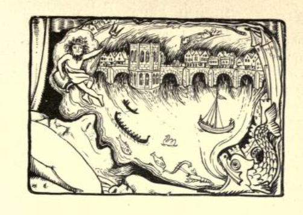
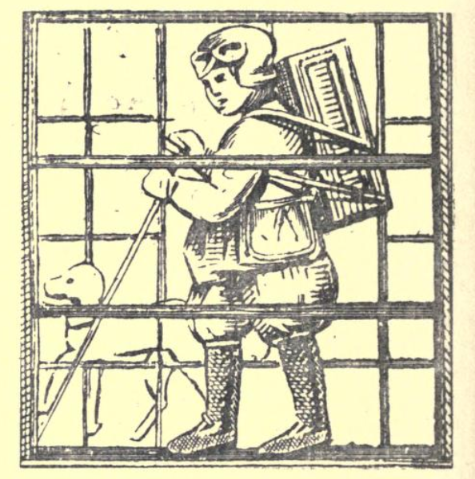
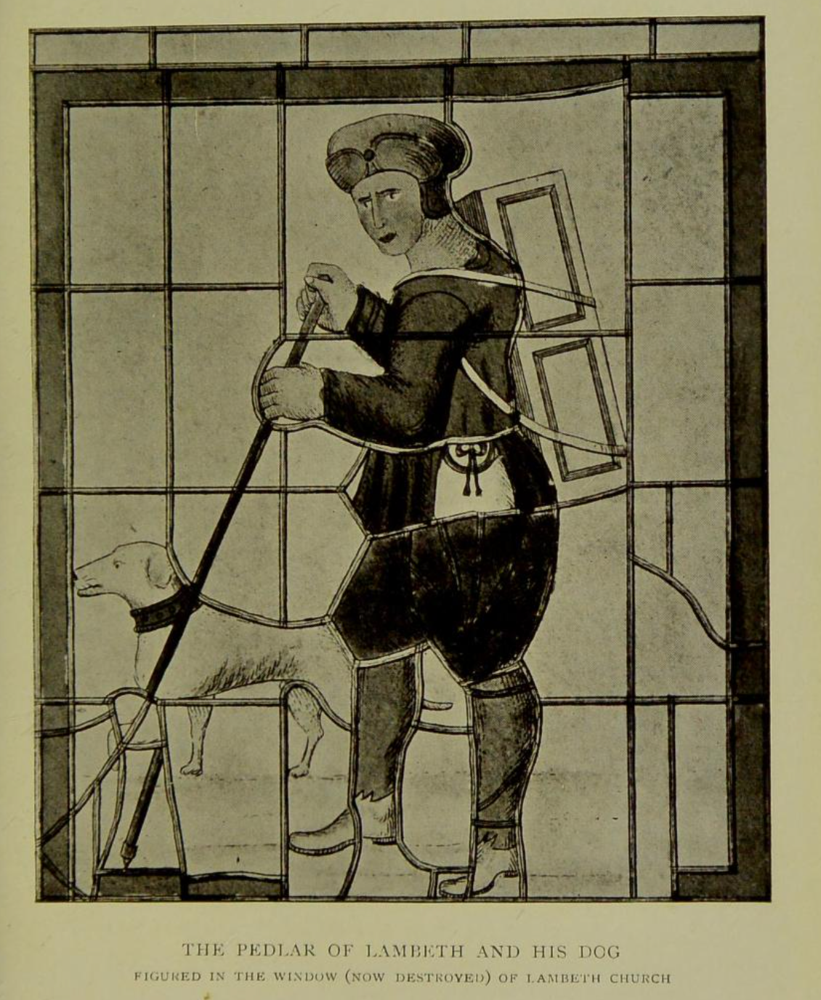
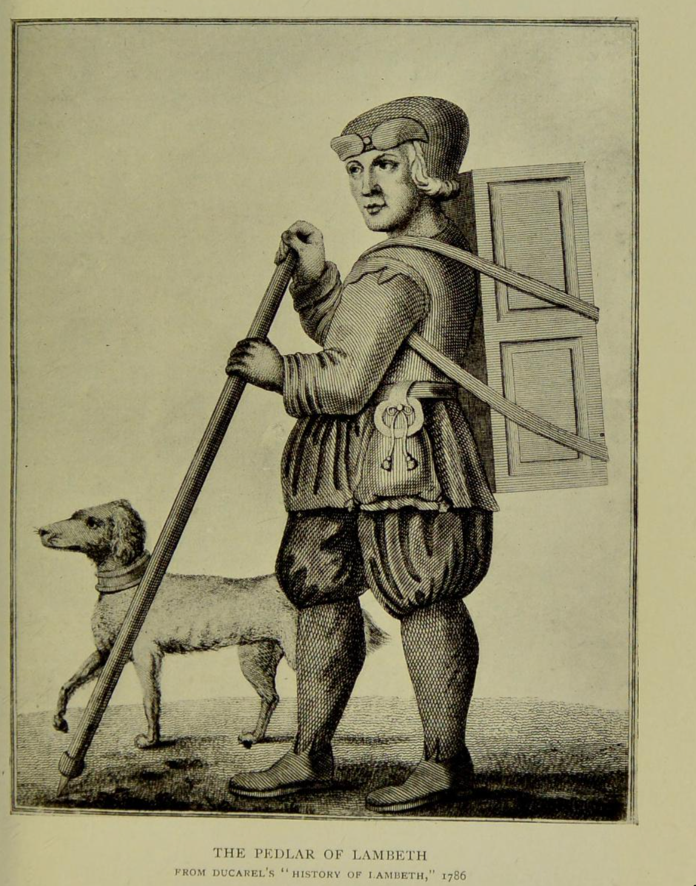

The Pedlar of Swaffham#
My way in to this story is “In the county of Norfolk, in the town of Swaffham, there was a pedlar. He lived …” The tree in the tale is set in an orchard, and is referred to as an oak. But in the cante fable telling we’re developing for Stories’n’Harp, the tree is an apple tree to tie in with the Apple Tree Wassail that provides the musical and sung theme. And I also make use our our large apple-tree, which grows on a slant away from the shade of a neighbour’s much larger willow, which has, very sadly, died, for my mind’s-eye representation of the tree under which the treasure is found…
An exemplary version of the story is given by Hugh Lupton in a recording from on online seminar on the story itself, as well as the wider storytelling tradition.
A popular version of the tale appeared in Jacobs’ second collection of English fairy tales in 1894.
In Jacobs, More English Fairy Tales, 1894
Joseph Jacobs, More English fairy tales, 1894, pp91-3.

The Pedlar of Swaffham
IN the old days when London Bridge was lined with shops from one end to the other, and salmon swam under the arches, there lived at Swaffham, in Norfolk, a poor pedlar. He’d much ado to make his living, trudging about with his pack at his back and his dog at his heels, and at the close of the day’s labour was but too glad to sit down and sleep. Now it fell out that one night he dreamed a dream, and therein he saw the great bridge of London town, and it sounded in his ears that if he went there he should hear joyful news. He made little count of the dream, but on the following night it come back to him, and again on the third night.
Then he said within himself, “I must needs try the issue of it,” and so he trudged up to London town. Long was the way and right glad was he when he stood on the great bridge and saw the tall houses on right hand and left, and had glimpses of the water running and the ships sailing by. All day long he paced to and fro, but he heard nothing that might yield him comfort. And again on the morrow he stood and he gazed he paced afresh the length of London Bridge, but naught did he see and naught did he hear.
Now the third day being come as he still stood and gazed, a shopkeeper hard by spoke to him.
“Friend,” said he, “I wonder much at your fruitless standing. Have you no wares to sell?”
“No, indeed,” quoth the pedlar.
“And you do not beg for alms.”
“Not so long as I can keep myself.”
“Then what, I pray thee, dost thou want here, and what may thy business be?”
“Well, kind sir, to tell the truth, I dreamed that if I came hither, I should hear good news.”
Right heartily did the shopkeeper laugh.
“Nay, thou must be a fool to take a journey on such a silly errand. I’ll tell thee, poor silly country fellow, that I myself dream too o’ nights, and that last night I dreamt myself to be in Swaffham, a place clean unknown to me, but in Norfolk if I mistake not, and methought I was in an orchard behind a pedlar’s house, and in that orchard was a great oak tree. Then meseemed that if I digged I should find beneath that tree a great treasure. But think you I’m such a fool as to take on me a long and wearisome journey and all for a silly dream. No, my good fellow, learn wit from a wiser man than thyself. Get thee home, and mind thy business.”
When the pedlar heard this he spoke no word, but was exceeding glad in himself, and returning home speedily, digged underneath the great oak-tree, and found a prodigious great treasure. He grew exceeding rich, but he did not forget his duty in the pride of his riches. For he built up again the church at Swaffham, and when he died they put a statue of him therein all in stone with his pack at his back and his dog at his heels. And there it stands to this day to witness if I lie.
NOTES p 229
LXIII. THE PEDLAR OF SWAFFHAM.
Source. Diary of Abraham de la Pryme (Surtees Soc.) under date 10th Nov., 1699, but re-written by Mr. Nutt, who has retained the few characteristic seventeenth century touches of Pryme’s dull and colourless narration. There is a somewhat fuller account in Blomfield’s History of Norfolk, vi. 211-13, from Twysden’s Reminiscences, ed. Hearne, p. 299. In this there is a double treasure; the first in an iron pot with a Latin inscription, which the pedlar, whose name is John Chapman, does not understand. Inquiring its meaning from a learned friend, he is told
Under me doth lie
Another much richer than I.
He accordingly digs deeper and finds another pot of gold.
Parallels. Blomfield refers to Fungerus, Etymologicum Latino Graecum, pp. 1110-11, where the same story is told of a peasant of Dort, in Holland, who was similarly directed to go to Kempen Bridge. Prof. E. B. Cowell, who gives the passage from Fungerus in a special paper on the subject in the Journal of Philology, vi. 189-95, points out that the same story occurs in the Masnávi of the Persian port Jalaluddin, whose floruit is 1260 A.D. Here a young spendthrift of Bagdad is warned in a dream to repair to Cairo, with the usual result of being referred back.
Remarks. The artificial character of the incident is sufficient to prevent its having occurred in reality or to more than one inventive imagination. It must therefore have been brought to Europe from the East and adapted to local conditions at Dort and Swaffham Prof. Cowell suggests that it was possibly adapted at the latter place to account for the effigy of the pedlar and his dog.
In the notes, Jacobs mentions a variant where a second pot, hidden rather deeper than the first, is revealed from a Latin inscription on the first pot. This variant also appears in a brief telling of the legend in John Glyde’s collection of Norfolk tales, The Norfolk Garland, from 1872.
Version in The Norfolk Garland, John Glyde, 1872
The Norfolk garland: a collection of the superstitious beliefs and practices, proverbs, curious customs, ballads and songs, of the people of Norfolk, as well as anecdotes illustrative of the genius or peculiarities of Norfolk celebrities by John Glyde, , jr, pp. 68-9.
Publication date [1872]
THE SWAFFHAM LEGEND.
Swaflfham Church, noted for its architectural beauties, has furnished material for a legend worth recording. According to tradition, the entire expense of erecting this noble edifice was defrayed by a tinker or pedlar residing in the parish named John Chapman, who, if the voice of the legend is to be believed, was marvellously provided for by Divine Providence. It is said that this tinker dreamed that if he went to London Bridge he would, to use the phraseology of a certain class of advertisements, “ hear of something greatly to his advantage.” Nothing daunted by the difficulties of so long a journey five hundred years ago, when, not to utter a hint of railroads, even stage coaches had not been invented, the tinker heeded the voice of his good spirit, and went to London. After standing about the bridge for several hours — some versions of the legend mention the traditional three days — a man accosted him, and invited him to unfold the nature of his errand. With candour quite equal to his faith, John Chapman replied that he came there on the “vain errand of a dream.” Now it appears that the stranger was a dreamer also, but unlike the tinker, he was neither superstitious nor imprudent. “Alas! good friend,” said he, “if I had heeded dreams, I might have proved myself as very a fool as thou art, for ‘tis not long since I dreamt that at a place called Swaffham in Norfolk dwelt John Chapman, a pedlar, who hath a tree at the back of his house, under which is buried a pot of money.” John Chapman, of course, on hearing this hastened home, dug under his tree, and very soon found the treasure. But not all of it. The box that he found had a Latin inscription on the lid, which of course John Chapman could not decipher. But though unlettered, he was not without craftiness and a certain kind of Wisdom, so in the hope that some unsuspicious wayfarer might read the inscription in his hearing, he placed it in his window. It was not long before he heard some youths turn the Latin sentence into an English couplet:
Under me doth lie
Another much richer than I.
Again he went to work, digging deeper than before, and found a much richer treasure than the former. With a heart overflowing with gratitude for his good fortune, the tinker shortly afterwards, when the inhabitants of Swaffham wished to re-edify their church, astonished the whole town by offering to defray the expense of a large portion of the works. On the ends of the oaken bench nearest the pulpit, there is the earved effigy of John Chapman on one side and that of his dog on the other, and this is sufficient to establish the truth of the legend in the minds of the credulous of the district.
Jacobs cites as a source the Diary of Abraham de la Pryme, originally written by a Yorkshire antiquary in 1699, printed by the Surtees Society in 1869, and also republished in English fairy and other folk tales, with a forward by E. S. Hartland, originally published in 1890.
Diary of Abraham De la Pryme, Surtees Society, 1699 / 1869
The diary of Abraham De la Pryme, the Yorkshire antiquary, The publications of the Surtees Society, vol. LIV, pp. 219-20, 1869.
See also: E. S. Hartland, English fairy and other folk tales, 1890, p76-7.
THE PEDLAR OF SWAFFHAM. [*Diary of Abraham dela Pryme*, p. 220, under date 10 Nov. 1699. (Surtees Society.)]
Constant tradition says that there lived in former times in Soffham (Swaflfham), alias Sopham, in Norfolk, a certain pedlar, who dreamed that if he went to London Bridge, and stood there, he should hear very joyfull newse, which he at first sleighted, but afterwards, his dream being doubled and trebled upon him, he resolved to try the issue of it, and accordingly went to London, and stood on the bridge there two or three days, looking about him, but heard nothing that might yield him any comfort At last it happened that a shopkeeper there, hard by, having noted his fruitless standing, seeing that he neither sold any wares nor asked any almes, went to him and most earnestly begged to know what he wanted there, or what his business was; to which the pedlar honestly answered that he had dreamed that if he came to London and stood there upon the bridge he should hear good newse; at which the shopkeeper laught heartily, asking him if he was such a fool as to take a journey on such a silly errand, adding: “I’ll tell thee, country fellow, last night I dreamed that I was at Sopham, in Norfolk, a place utterly unknown to me, where methought behind a pedlar’s house in a certain orchard, and under a great oak tree, if I digged I should find a vast treasure! Now think you,” says he, “that I am such a fool to take such a long journey upon me upon the instigation of a silly dream? No, no, I’m wiser. Therefore, good fellow, learn wit from me, and get you home, and mind your business.” The pedlar observing his words, what he had say’d he dream’d, and knowing they concentred in him, glad of such joyful! newse, went speedily home, and digged and found a prodigious great treasure, with which he grew exceeding rich; and SofFham (Church) being for the most part fallen down, he set on workmen and rectified it most sumptuously, at his own charges; and to this day there is his statue therein, but in stone, with his pack at his back and his dogg at his heels; and his memory is also preserved by the same form or picture in most of the old glass windows, taverns, and alehouses of that town unto this day.
Jacob’s also refers to Twysden’s Reminiscences in Blomfield’s History of Norfolk as providing an additional detail — that beneath the initial treasure pot, there was a second. Twysden himself appears to have learned of the tale in a letter to him from a certain Mr. William Dugdale of Blyth Hall, in Warwickshire, dated the January 29th, 1652-3.
Twysden, crediting Dugdale, 1652-3, in Blomefield’s “Norfolk”, 1739
Francis Blomefield, An essay towards a topographical history of the county of Norfolk, containing a description of the towns, villages, and hamlets, …, Vol 3, 1739, pp. 506-508.
The North Isle of this Church
Is generally reported and believed to be built by John Chapman a Tinker, of this Town, the History of it I shall here Transcribe from Sir Roger Twysden’s Remembrances Ms; P. 299, published by our great English Antiquary Mr. Hearne of Oxford and then shall give my Opinion on it:
The Story [Tho. Caij. Vindic. Antiq. Acad. Oxon. Vol. I, P. 84, Appendix] of the PEDLAR of Swaffham Market is in substance to this.
That Dreaming one Night if he went to London, he should certainly meet with a Man upon London Bridge, whith would tell him good News; he was so perplext in his Mind, that till he set upon his Journey, he could have no Rest:” To London therefore he hasts, and Walk’d upon the Bridge for some Hours, where being espyed by a Shopkeeper, and asked what he wanted, he answered, you may well ask me that Question, for truly ( quoth he) I am come hither upon a very vain Errand, & so told the story of his Dream which occasioned the Journey. Whereupon the Shopkeeper reply’d, Alas good Friend! should I have heeded Dreams, I might have proved myself, as very a Fool as thou Hast; for tis not long since that I dreamt, that at a Place called Swaffham Market in Norfolk, dwells one John Chapman a PEDLAR, who hath a Tree, in his Backside unger which is buried a Pot of Money. Now therefore, if I should have made a Journey thither to dig, for such hidden Treasure, judge you whether I should, not have been counted a Fool. To whom the PEDLAR cunningly said “Yes verily;” I will therefore return home and follow my business, not heeding such Dreams hence forward. But when he came Home, (being satisfied that his Dream was fulfilled,) he took occasion to dig in that Place, and accordingly found a large Pot full df Money, which he prudently conceal’d, putting the Pot amongst the rest of his Brass, After a Time it happen’d that one, who came to his House and beholding the Pot, observed an Inscription upon it, which being in Latin [The common Tradition is, it was in English Rhyme, viz. Where this stood, Is another as good. Or as some will have it, Under me dothe lye, Another much richer than I.], he Interpreted it, that under that there was another twice as good. Of this Inscription the PEDLAR was before Ignorant, or at least minded it not, but when he heard the Meaning of it he said, tis very true, in the Shop where I bought this Pot, stood another under it, which was twice as big; but considering that it might tend to his further profit to dig deeper in the same Place where he found that, he fell again to Work, and discoverd such a Pot, as Was intimated by the Inscription, full of old Coine: Notwithstanding which, he so conceal’d his Wealth, that the Neighbours took no Notice of it. But not long after the Inbabitance of Swaffham resolving to reedify their Church, and having consulted the Workmen about the Charge, they made a Levy, wherein they taxed the PEDLAR, according to no other Rate than what they had formerly done. But he, knowing his own Ability, came to the Church and desired the Workimen to shew him thir Model, and to tell him what they esteemed the Charge of the NORTH-ISLE would amount to; which when they told him, he presently undertook to pay them for Building it, and not only that, but of a very tall and beautifull Tower Steeple. This is the tradition of the Inhabitants as it was told me there. And in Testimony thereof, there was then his Picture, with his Wife and three Children, in every Window of the Isle, with an Inscription running through the bottom of all those Windows, viz. Orate pro bono Statu Johannis Chapman, … Uroris eius, et Libecorum luorum, qui quidem Johannes hanc Alam cum fenestris, teao et … rect fecit.
It was in Henry VII. Time, but the Year I now remember not, my Notes being left with Mr. William Sedgwike, who trickt the Pictures, he being then with me.
In that Isle is his Seat, of an antique Form, and on each Side the Entrance, the Statue of the PEDLAR of about a Foot in Length, with his Pack on his Back, very artificially Cut.
This was sent me from Mr. WILLIAM DUGDALE of Blyth Hall in Warwickshire, in a Letter dated the 29th of January 1652-3, which I have since learnt from others to have been most true.
ROGER TWYSDEN,
Blomefield also teases us with hints of other, parallel versions of the legend.
And in effect the same has been found, in the Histories Admirables de nostre Temps’ par Simon Goulart, imprime a Geneve 1614, Tom. 3, P. 366. Soubs ce titre, Songe marveilleus, &c. Et Johannis Fungeri Etimologicon Latino-Græcum, Pag. 1110, et 1111.
He then goes on to wonder about how anyone could believe such a legend to be true,
It is somewhat surprizing to find such considerable Persons as Sir William Dugdale, Sir Roger Twysden, &c. to patronize or credit such a Monkish Legend and Tradition favouring so much of the Cloister, and that the Townsmen and Neighbourhood should also believe it. I shall therefore endeavour to clear up this trite Story.
Blomefield’s “true history” of the tale
The Seat of the PEDLAR observed by Dugdale in his Time, to be in the North Isle, was taken down with others some Years past, when the greatest part of the Church, with the East End of the said Isle was new Seated and Pew’d in a modern way, but in the North Transept Chapel there is now, a patch’d piece of Woodwork, collected out of the Fragments of antient Stalls and Seats, and here united. On the lower Part of this Work is this Inscription, Drate pro animabus, and near the Top, Johannis Langman … Katerine … this Part no doubt belonged to some Seat made at the Charge of John Langman, who appears from an antient Mss, of this Church, call’d the BLACK-BOOk, to have been a considerable Benefactor to it. In the middle of this Work, and between the Inscriptions, is twice represented the Effigies of a Man as busied in his Shop, with a Mark of an I and C. conjoin’d, near it, probably for John Chapman and Catharine his Wife, and the Figure of a Woman also carv’d in two Places, and looking over the Door of a Shop. This Work is supported on each Side by the Heads of the Founders Seat, on both which near the Summit is a PEDLAR carv’d, with a Pack upon his Shoulders, and below him near the Bottom, a Figure which is commonly said to be a Dog, but from his being muzzled and a Chain running croſs his Back, is much more likely to prove a Bear, and so it seems to be in the Window of the North Isle, The uppermost Window but one of this Isle is now the only one, where the Effigies are remaining, here they are represented in two Places in a suppliant Posture, with close round purple Gowns turn’d up, and robed with Furr, tincturd Or. He has a rich Pilgrims Purse or Pouch hanging from a curious Belt or Girdle, and a little Dagger, and from her right Side hangs a string or Lace, at the End of which is something very like to the Shield and Arms of the antient Family of the Knever’s in Norfolk, but I believe nothing more than a Buckle; behind her kneels her Son in a close blew Gown furr’d Or, there were two more Children behind him, but they are broken and lost. At the bottom of the Window this fragment of an Inscription now remains,
… Fenestre, ad Deict Sanctorum eius gloriam.
Over the Head of the Man in one Pannel as a Label,
petite Petre … Paule Beate.
In another.
… Christi Baptista Pisca .…
That the North Isle of this Church was founded by John Chapman, who was ChurchWarden in 1462, is beyound dispute; but that the Founder was a PEDLAR, is very improbable, for the [These Zonae Stipatae, Pretiosae,Epitogia, Clochae furratae ad oram, Bursae cum imaginibus variis, et sculpti, enemalati et deaurati Cultelli, ad modum Gladiorum dependentes, &c, belonged to the People of Diſtinction, but were forbid the Clergy by John Stratford Archbishop of Cant. Lindwodj Provinc' Lib. 3T de Vitâet honestate Clericorum, &c. P. 123. It appears from an Arabick Canon of the 1st Nicene Council, that the bearing of a Purse is very Antient, which Canone enjoyns, that those in Holy Orders should not carry about them a pair of Knives, as if they were quarrelling Fellows, going out to fight and kill, &c. and that they should not hang a Purse at their Girdle. Ridley's View of Civil and Eccle' Law, P. 263.] Richness of his Habit, &c. shews that he was a Person of Distinction: Now had this CHAPMAN been really a PEDLAR, it would have been more commendable to have had a Pourtraiture suitable to his Calling, (as is the Picture of the PEDLAR who was a Benefactor to the Church of St. Mary Lambeth in Surry) and to have been represented on the Glass, as the PEDLAR is on his Seat. If the carv’d Work was design’d to perpetuate the Memory of his low Degree, the Affectation of a Dress on the Glads so much superior to his Station, being of a Piece with other Benefactors in the Windows, Men of Estate and Worth, must be ridiculous to his own Times, and frustrate the very End and Intent of the Carving, by showing Posterity that he was a Man of Figure and Fortune.
The Truth of the Case seems to be no more than this, the Figures of a Pedlar, and a Man and Woman busied in their Shop, were according to the low taste of that Age in a modest Manner to set forth the Name of the Founder CHAPMAN, a Trader or Dealer, the word Chapman for a Trader is of great Antiquity, and Pedlars are often called by that Name even to this Day, by some antient People, such Rebusses are frequently met with on old Works, but I shall only mention One, and that because it is in the very Church.
Near to the Communion, Table on the North Side is the Altar Monument of John Botwright, D. D. Rector of the Church when it was Rebuilt, on the body of the Tomb are four Shields, two, to represent his Priesthood, bearing the Sacramental Cups, and the Triangilur Emblem of the TRINITY, and two to represent his Name, bearing Boats and Wimbles, Instruments essential to any Wright or Worker in Wood, an Ænigma or Rebus full as obscure, as [History of Walter Hemingford, published by Mr. Hearne, Vol. I, Appendix, P. 180.] Chapman, under the Figure of a Pedlar.
Returning to the tale itself, Blomfield’s version is a direct quote from a work a few years earlier, which is also the source of the hinted at alternatives.
In Hearne’s edition of Thomæ Caii, Vindiciæ antiquitatis Academiae Oxoniensis, 1730
Thomæ Caii (Collegii Universitatis regnante Elizabetha magistri) Vindiciæ antiquitatis Academiae Oxoniensis contra Joannem Caium, Cantabrigiensem. In lucem ex autographo emisit Tho. Hearnius. … Duobus voluminibus. 1730: Vol 1-2, pp. lxxxiv-lxxxvi.
Num. IX. Vide Praef. S. XXXII.
Coll. nostr. MSS. Vol. 124 . P. 54
From Sr. Roger Twysden’s Remembrances, Ms. (lent me by my learned Friend Dr. Thorpe of Rochester ) p.299.
THE Story of the Pedler of Swafham-Market is in Subſtance this:
That dreaming one night, if he went to London, he ſhould certainly meet with a man upon London Bridg, which would tell him good news, he was ſo perplex’t in his mind, that till he ſet upon the journey, he could have no reſt. To London therefore he haſts, & walked upon the Bridge for ſome hours; where being eſpyed by a Shop-keeper, and asked what he wanted, he anſwer’d, you may well ask ne that queſtion, for truely (quoth he) I am come hither upon a very vain errand, & ſo told the ſtory of his dream which orcaſioned the journey. Whereupon the Shop-keeper replyed, Alas good friend, ſhould I have heeded dreames I might have proved my ſelf as very a fool as thou haſt; for tis not long ſince that I dream’t, that at a place called Swafham-Market in Norfolk dwells one John Chapman a Pedler, who hath a tree in his backſide, under which is buried a pot of Money. Now therefore if I ſhould have made a journey thither to dig for ſuch hidden treaſure, judge you whether I ſhould not have been counted a fool. To whome the Pedlar cunningly ſayd, yes verely, I will therefore return home and follow my buſineſſe, not heeding ſuch dreames hence forwards. But when he came home (being ſatisfyed that his dream was fulfilled) he took occaſion to dig in that place, and accordingly found a larg pot full of money, which he prudently concealed, ſetting the pot amongſt the reſt of his bralle. After a time it hapned, that one, who came to his houſe, and beholding the pot, obſerved an inſcription upon it, which being in Latine [id eſt, et ſicuti conjicjo. Nam ſic & alibi idem ſignu], he interpreted, viz. that under that there was an other twiſe as good. of this inſcription the Pedlar was before ignorant, or at leaſt minded it not; but when he heard the meaning of it he ſapy, Tis very true, In the ſhop where I bought this pot stood an other under it, which was twiſe as big: but conſidering that it might tend to his further profit to dig deeper in the ſame place where he found that, he fell again to work, & diſcovered ſuch a pot, as was intimated by the inſcription, full of old coine. Notwithſtanding all which, he ſo concealed his wealth, as that the neighbours took no notice of it. For not long after the inhabitance of Swafham reſolving to reedify their Church, and having conſulted with the workmen about the charge, they made a Levy, wherein they taxed the Pedlar according to no other rate then what they formerly had don. But he knowing his own abilitys, came to the Church, and deſired the workmen to ſhew him their modell, and to tell him what they eſteemed the charge of the North Ile would amount to; which when they told him, he preſently undertooke to pay them for building it, and not onely that, but of a very tall and beautifull Tower Steeple. This is the tradition of the inhabitants as it was told me there. And in Teſtimony thereof, there was then his picture, with his wife and 3 children, in every window of the Ile, with an inſcription running throngh the bottome of all thoſe windows, viz. Orate pro bono ſtatu Johannis Chapman uxoris ejus, et liberorum ſuorum, qui quidem Johannes hanc alam, cum feneſtris, tecto et - - - - fieri fecit.
It was in H. 7. time. but the year I now remember not, my notes being left with W. Sedgwike who trickt the pictures, being then with me.
In that Ile is his ſeat of an antique forme, and on each ſide the entrance, the ſtatue of the Pedlar, of about a foot in length, with his pack on his back very artificcally cut.
This was ſent mee from Mr Wm Dugdale, of Blyth hall in Warwickſhire, in a letter dated the 29 January 1652, which I have ſince learnt from others to have beene moſt true.
Roger Twyſden,
But in effect the ſame is found in the Hiſtoires admirables de noſtre temps par Simon Goulart imprime a Geneve 1614. tom. 3. p. 366. ſoubs ce titre Songe merveilleus, et Johannis Fungeri Etimologicon Latino-Græcum, pag. 1110 et 1111.
A “modern English” version was published by Professor E. B. Cowell, reprinted in the Journal of Philology in 1876.
Cowell’s “modern English” form of Twysden, 1875-6
In Cambridge Antiquarioan Communications, Papers Presented at the meetings of the Cambridge Antiquarian Society, vol. 3, no. XVIII, 1875, pp. 317-322.
Also in The Journal of Philology, v. 6 1876, pp. 189-195.
XXXII. On the Legend of the Chapman of Swaffham IN Norfolk. Communicated by E. B.Cowell, Esq., M. A., Professor of Sanskrit, and dated [May 24, 1875.]. [It was entitled *THE LEGEND OF THE CHAPMAN OF SWAFFHAM CHURCH* in the Journal of Philology]
I GIVE the English form of this legend in the words of Sir Roger Twysden, as quoted in Blomefield’s ‘History of Norfolk,’ 8vo. ed. Vol. VI. pp. 211—–213.
“The north aisle of Swaffham Church is generally reported and believed to be built by John Chapman, a tinker of this town: the history of it I shall here transcribe from Sir Roger Twysden’s Remembrances, MS. p. 299, published by our great antiquary, Mr Hearne of Oxford, and shall then give my opinion on it.
“The story of the Pedlar of Swaffham Market is in substance this [Tho. Caii Vindic. Antiq. Acad. Oxon. Vol. I p.84, Append.]: ‘That dreaming one night if he went to London, he should certainly meet with a man upon London Bridge, which would tell him good news; he was so perplext in his mind that till he set upon his journey he could have no rest; to London therefore he hastes, and walked upon the Bridge for some hours, where being espied by a shopkeeper and asked what he wanted, he answered, ‘You may well ask me that question, for truly (quoth he) I am come hither upon a very vain errand,’ and so told the story of his dream which occasioned the journey.
Whereupon the shopkeeper replied, ‘Alas, good friend, should I have heeded dreams I might have proved myself as very a fool as thou hast; for ‘tis not long since that I dreamt that at a place called Swaffham Market, in Norfolk, dwells one John Chapman, a pedlar, who hath a tree in his back side, under which is buried a pot of money. Now, therefore, if I should have made a journey thither to dig for such hidden treasure, judge you whether I should not have been counted a fool.’ To whom the pedlar cunningly said, ‘Yes, verily; I will therefore return home and follow my business, not heeding such dreams henceforward.’ But when he came home (being satisfied that his dream was fulfilled), he took occasion to dig in that place, and accordingly found a large pot full of money, which he prudently concealed, putting the pot among the rest of his brass. After a time it happened that one who came to his house and beholding the pot, observed an inscription upon it, which being in Latin he interpreted it, that under that there was another twice as good [The common tradition is, it was Or as some will have it: in English rhyme, viz.: "Where this stood, "Under me doth lie, Another much richer than I. "Is another as good;"]. Of this inscription the pedlar was before ignorant, or at least minded it not; but when he heard the meaning of it he said, “Tis very true, in the shop where I bought this pot stood another under it which was twice as big;’ but considering that it might tend to his further profit to dig deeper in the same place where he found that, he fell again to work and discovered such a pot as was intimated by the inscription, full of old coin; notwithstanding all which, he so concealed his wealth that the neighbours took no notice of it. But not long after the inhabitants of Swaffham resolving to re-edify their church, and having consulted the workmen about the charge, they made a levy, wherein they taxed the pedlar according to no other rate but what they had formerly done. But he knowing his own ability came to the church and desired the workmen to show him their model, and to tell him what they esteemed the charge of the north aisle would amount to; which when they told him, he presently undertook to pay them for building it, and not only that, but of a very tall and beautiful tower steeple.’ This is the tradition of the inhabitants, as it was told me there. And in testimony thereof, there was then his picture, with his wife and three children, in every window of the aisle, with an inscription running through the bottom of all those windows, viz. ‘Orate pro bono statu Johannis Chapman… Uxoris ejus, et Liberorum suorum, qui quidem Johannes hanc alam cum fenestris tecto et…fieri fecit.’
“It was in Henry the Seventh’s time, but the year I now remember not, my notes being left with Mr William Sedgwicke, who trickt the pictures, he being then with me. In that aisle is his seat, of an antique form, and, on each side the entrance, the statue of the pedlar of about a foot in length, with pack on his back, very artificially cut. This was sent me from Mr William Dugdale, of Blyth Hall, in Warwickshire, in a letter dated Jan. 29th, 1652-3, which I have since learned from others to have been most true.
“ROGER TWYSDEN.”
Cowell notes the parallel references to Johannes Fungerus’ “Etymologicon Latino-Græcum,”, pp. 1110-1, originally published in 1605, and quotes from it.
Fungerus, 1605, in Cowell, 1876 (cont.)
Blomefield remarks that the story is to be found in Johannes Fungerus’ “Etymologicon Latino-Græcum,” pag. 1110, et 1111, where it is told of a man of Dort in Holland. Blomefield also adds that the north aisle of the church was certainly built by John Chapman, who was churchwarden in 1462; but he thinks that the figures of the pedlar, &c., were only put “to set forth the name of the founder; such rebuses are frequently met with on old works.”
The story is also told in Abraham de la Pryme’s diary (Nov. 10, 1699) as a “constant tradition” concerning a pedlar in Soff ham, alias Sopham, in Norfolk.
As Fungerus’ book is not a common one, I subjoin the passage to which Blomefield alludes; it occurs in the article somnus. The copy of the “Etymologicon Latino-Græcum” in the University Library bears the date ‘Lugduni, 1607.’
“Rem quæ contigit patrum memoriâ ut veram ita dignam relatu, et sæpenumero mihi assertam ab hominibus fide dignis apponam. Juvenis quidam in Hollandia, Dordraci [Dort.] videlicet, rem et patrimonium omne prodegerat, conflatoque ære alieno non erat solvendo. Apparuit illi quidam per somnium, monens ut se conferret Campos [Kempen.]: ibi in ponte indicium aliquem facturum, quid sibi, ut explicare se posset illis difficultatibus, instituendum foret. Abiit eo, cumque totum fere diem tristis et meditabundus deambulationem supra prædictum pontem insumsisset, misertus ejus publicus mendicus, qui forte stipem rogans illic sedebat, quid tu, inquit, adeo tristis? Aperuit illi somniator tristem et afflictam fortunam suam, et qua de causa eo se contulisset. Quippe somnii impulsu huc se profectum, et exspectare Deum velut a machina, qui nodum hunc plus quam Gordium evolvat. At mendicus, Adeone tu demens et excors, ut fretus somno, quo nihil inanius, huc arriperes iter? Si hujuscemodi nugis esset habenda fides, possem et ego me conferre Dordracum ad eruendum thesaurum sub cynosbato defossum horti cujusdam (fuerat autem hic hortus patris somniatoris hujus,) mihi itidem patefactum in somno. Subticuit alter, et rem omnem sibi declaratam existimans rediit magno cum gaudio Dordracum, et sub arbore prædicta magnam pecuniæ vim invenit, quæ ipsum liberavit (ut ita dicam) nexu, inque lautiore fortuna, dissoluto omni ære alieno, collocavit.”
We see by this extract that the story is one by no means confined to Norfolk, but equally current in Holland and probably elsewhere on the continent. It is evidently an old legend, located by popular fancy in several widely distant spots (just like that of Whittington and his cat), and it has only become connected with Swaffham as an attempt to explain the forgotten mystery of the figure of the chapman and his pack in the parish church.
Johannes Fungerus, 1605, via Google Translate
The thing that happened to my father’s memory, as the truth so worthy of a report, and many times asserted to me by men worthy of belief, I attach. A certain young man in Holland, Dordraci [Dort.]'' to be sure, had saved all his property and patrimony, and he was not willing to pay it to a stranger. A certain man appeared to him in a dream, advising him to bring himself to Campos [Kempen.]’: there on the bridge someone would give him an indication of what should be done for him, so that he could explain himself to those difficulties. He went away, after he had taken a sad and meditative walk over the aforesaid bridge almost the whole day. The dreamer revealed to him his sad and afflicted fortune, and for what reason he had taken it. With the impulse of a dream he set out hither, and to wait for God as if from a machine, who unties this knot more than Gordian. But the beggar, Adeon, you mad and mad, as if relying on a dream, in which there is nothing more empty, would you take the journey hither? If such a toy were to be believed, I too could bring myself to Dordracus to excavate a treasure buried under a cynosbat in a certain garden (and this was the garden of the father of this dreamer), which had likewise been revealed to me in a dream. The other supported him, and thinking that everything had been made clear to him, he returned with great joy to Dordracus, and found under the aforesaid tree a large amount of money, which freed him (so to speak) from the connection, and in it he invested it with a greater fortune, having dissolved all foreign honor.
Cowell also provided a version found in a “great Persian metaphysical and religious poem called the Masnaví, written by Jalaluddin, who died about A.D. 1260”.
A parallel tale, Masnavi, 1260, in Cowell, (cont.)
Modern research has shown that a very large proportion of the popular legends of Europe can be traced in their oldest forms to the East, and especially to the early Buddhist writings, as fables and stories were continually used by the Buddhist teachers to illustrate and popularize their doctrines. I have not succeeded in tracing this at present to India or to a Buddhist source; but I have found it in the great Persian metaphysical and religious poem called the Masnaví, written by Jalaluddin, who died about A.D. 1260, and therefore it may very probably have come to him from a still more Eastern home.
I subjoin a translation of the legend as it appears in the Masnaví, only slightly compressing it, and omitting the long metaphysical and mystical digressions with which the author, more suo, continually interrupts the course of the story.
In his prose title prefixed to the chapter, he tells his readers that the man is sent to Cairo to learn that “a man’s treasure is only to be sought in his own house, though he may have to go to Egypt to find it.”
A certain heir in Baghdad possessed boundless wealth;
He wasted it all and was left destitute and forlorn.
(Hereditary wealth is never faithful,
For unwillingly it parted from him who is gone.)
When he became empty, he remembered God,
And began to say ‘O God, look upon me;’
He said ‘O God, thou gavest me wealth and it is gone;
O give me wealth again or send me death.’
And one night he saw a dream, and an angel’s voice said to him,
‘In Cairo shall thy wealth be found;
‘In a certain place is a great treasure;
‘Thou must go to Cairo in search for it.’
When from Baghdad he came to Cairo,
His back became hot as he saw the face of the country,
In his hope that the heavenly voice would prove true,
That so he might find a treasure there to banish his sorrow.
The voice had said that in a certain street in a certain place.
A treasure of marvellous value lay buried.
But of provisions, little or much, he had none left;
And he began to beg of the common people.
But shame and spirit seized the hem of his garment,
And he began to gather himself up for endurance;
And then again his appetite fretted with hunger,
And he saw no escape from showing his want and begging.
At last he said ‘I will go out softly at night,
‘That in the darkness I may not feel shame at begging.
‘Like a night-mendicant I will pray and beg,
‘That they may throw me half a dánk from the roofs.’
In this thought he went out into the street,
With this intent he wandered hither and thither.
At one moment shame and honour stopped him,
At another hunger said to him ‘beg.’
One foot forwards, one foot backwards, for a third of the night,
Saying, ‘shall I beg or shall I lie down with parched lips?”
Suddenly a watchman seized him,
And angrily beat him with fist and stick.
By chance it had happened that in those dark nights
The inhabitants had been greatly vexed with robbers,
And the Caliph had said, ‘Cut off that man’s hand,
Whoever wanders abroad at night, though he were my own kinsman.’
And the minister had sternly threatened the watchmen,
‘Why are ye so pitiful towards the robbers?’
It was at such a time that the watchman saw him and smote him,
With blows of stick and fist without number.
The poor man shrieked and cried aloud for help,
‘Strike me not,’ he said, ‘that I may tell thee my true story.
He answered, ‘I have given thee a respite, speak on;
Tell me how thou hast come out by night.
Thou art not of this place, thou art a stranger and one unknown;
Tell me truly in what treachery art thou engaged.
The officers of the court have blamed the watchmen,
Saying, ‘why are the thieves now so many?’
Their number is made up of thee and thy friends,
Disclose at once thy evil companions.
If not, I will take on thee the vengeance for all,
That the men in power may be no longer blamed.’
The other replied, after many oaths,
‘I am no house-burner or purse-stealer;
I am no robber or lawless liver:
I am a stranger to Cairo-a man of Baghdad.’
Then he told the story of the dream and the hidden treasure of gold,
And the heart of the watchman opened at his truthfulness.
The heart is at rest in upright speech,
As a thirsty man finds rest in water.
He answered, ‘thou art no thief or villain,
Thou art an honest man-only an owl and a fool.
For such a fancy and dream to take such a journey,
There is not a barley-corn’s worth of reason in thy head.
Times upon times have I seen a dream,
That in Baghdad there is a treasure hidden,
Buried in such a street, in such a quarter,’
(And lo! that was the very street of this distressed one,)
‘It is in such a house, go thou and find it,’
(And lo! the enemy mentioned his own name as that of the house,)
‘Times upon times have I seen this dream,
That there is a treasure in a place in Baghdad;
But in spite of the vision I never stirred from my place,
And thou from a dream wilt only find weariness of foot.’
He said to himself, ‘the treasure is in my own house;
Why then should I have poverty and sorrow here?
I have been dying of beggary on the top of a treasure,
Because I was in ignorance and behind a veil.’
At the good news he became drunk with joy and his pain was gone,
Silently he uttered a hundred times ‘Praise to God.’
Back to Baghdad he returned from Cairo,
Making prostrations and bowings, and uttering thanks and praise;
All the way amazed and drunk with joy at the wonder,
At this reverse of fortune and strange journey of search.
E. B. COWELL.
Between 1884 and 1887, the tale of the Pedlar of Swaffham came under the gaze of several contributors to The Antiquary magazine, starting with a review of the pedlar of legends of both Swaffham and Lambeth.
The Two Pedlar Legends of Lambeth and Swaffham, The Antiquary, October, 1884
The Antiquary Vol. X (July-December, 1884), October 1884, pp. 202-5.
The Two Pedlar Legends of Lambeth and Swaffham
Two very distant and distinct places have two nearly-related traditions — Lambeth in Surrey, and Swaffham in Norfolk. Both the legends are commemorated by memorials in the parish church, and last month we had the mortification to record that the church window at Lambeth, dedicated to the Pedlar, had been removed, to make room for a modern memorial window. We are glad to see that the parishioners of Lambeth have bestirred themselves, and compelled the vicar to promise restoration. So far, good. The restoration is not to be made to the place where the window was removed from, but a new window is to be built nearer to the original spot. If Lambeth people care to accept this compromise, archaeologists will not; if the window may thus be shifted from one place to another, at every one’s bidding, there will be no security for its lasting preservation. We shall continue to urge the complete restoration of the window, and we trust that the people of Lambeth will be true to their local celebrities, and insist upon this illegal removal being remedied.

Let us now consider the history of this famed pedlar of Lambeth. An account is given in Allen’s History of Lambeth, but the best is that given in Long Ago for September 1873 (vol. i., p. 271), taken from a manuscript in the handwriting of Archdeacon Drune, formerly rector of Lambeth. A descendant of the venerable Archdeacon, the Rev. Bradford Drune Hawkins, Rector of Riverdale, Witham, forwarded the account to the editor of Long Ago; and the following is a literal transcript:—
“Among the estates belonging to the parish of Lambeth is a piece of land, antiently call’d Church Hopys, [Old Vestry Book, fol. 2-5.] but since called Pedlar’s Acre. For what reasons it was so call’d I cannot learn, finding no historical vouchers to justify what the writer of the New View of London says about it in page 381; that a Pedlar gave this acre of land, besides ye following Benefactions in money, viz.:—
To ye Parish … £6 0 0
To ye Archbishop . . 100 0 0
To ye Rector … 20 0 0
To ye Clerk and Sexton each 10 0 0
for leave (as tradition reports) to bury his dog in ye churchyard. So far is true, that there is a Picture of a Pedlar and his dog in painted glass in ye window over ye Pulpit; wh suffering by the high wind was renewed at ye Parish expense in 1703 (Vestry Book, fol. 7-19). There appears to have been a like picture there in 1607 (Old Vestry Book, fol. 171 — 173), tho’ this Land was not then call’d by ye name of Pedlar’s Acre: nor in the lease granted February 20th, 1656, The first mention of that name, as far as I can find, was in ye lease August 6th, 1690. And might not this story take its rise from another Benefactor? of whom we have ye following account given by Bp. Gibson in his Edition of Camden. Henry Smith was once a Silver Smith in London, but he did not follow that trade long. He afterwards went a begging for many years, and was commonly called Dog Smith, because he had a dog wh always followed him — when he dyed, he left a very great estate in ye hands of Trustees upon a general acct of Charity, and more particularly for Surrey — After ye Trustees had made a considerable improvement of ye estate, and purchas’d several farms, they settled sold, per annum or thereabouts upon every market-town in Surrey, or gave 1000ld. in money upon every Parish excepting one or two they settled a yearly revenue. Among ye rest Lambeth has lold.’ (Camden, vol. i., p. 393.) From this acct I should suspect ye picture of ye Pedlar and his Dog to have been put up in memory of Mr. Smith, and to have no relation to ye Benefactor, who gave Church Hopys; could I acct for its being put up before his death, as it was in 1607, whereas he dyed in 1627, and was bur. at Wandsworth,— And yet such seems to have been ye Temper of ye man, yt he might do this in his own lifetime (as tradition says of the Pedlar), upon ye burial of his Dog in ye churchyard. He was whipt at Mitcham as a common vagrant for wh reason this parish was excluded from his Benefactions (Aubrey’s History, vol. il, p. 142). The Benefactor is unknown; but it appears to have been ye estate of ye Parish befor ye year 1504, [Old Vestry Book, fol. 2-5] for its Rent was then brought into the Church Account; and its Title was defended [Old Vestry Book, fol. 104, and 108 — no. Mr. Easton's claim was probably from a purchnse of lands, given to superstitious uses under a Statute I. Edward VI., cap. 14, section 5 (1542), wh vested such in ye crown (Gibson, Cod. 2nd vol., p. 1256). The Court Rolls were searched and quit-rent paid for it in 1648. —Old Vestry Book, fol. 2836.] out of the Church Stock, agst the claim of Mr. Easton in 1581. It was formerly [So called in 1623 (Old Vestry Book, fol. 223-6225-a), in 1629 (Old Vestry Book, fol. 241), and in 1654 (Vestry Book, fol. i), but in ye lease February 6, 1656, it was served and inclosed as a meadow, having been an osier Hoper. Thus described likewise in ye lease August 6, 1690, though it be also there called Pedlar s Acre, and as containing by estimation one acre more or less, tho' I never found it so call'd in ye Parish Acct Books till 1705.] an osier ground, and then let at small rack rents, [At 2s. 8d. in 1504 (Old Vestry Book, fol. 2-5) at 4s. in 1514 (fol. 9-19), at 5s. in 1554 (fol. 52-55) at 6s. 8d. in 1557 (fol. 54), at 13s. 4d. in 1565 (fol. 63), at ild. 6s. 8d. in 1581 (fol. 106-6), and at that rent with a fine of 5old. to lien. Price, upon a lease of 21 years in 1620 (fol. 212), but for 61 years commencing from Xmas, 1659, to Edw. Smitli, by lease dated February 24, 1656 (Vestry Book, fol. 14 and lease), which lease came afterwards to Bernard Whalley, Esq., of Bickley, Warwickshire, in right of his wife Lucy, dr to ye said Edw. Smith, who surrendered it in 1690, and had 61 years added to it in a new lease granted August 6, 1690, but to commence at Xmas following, by Geo. Hooper, D.D., John Ac worth, Thomas Rode, and Tho. Walker, then Rector and Churchwardens of the Parish, upon paying a fine of 5old. This lease was assigned to Tho. Wymondegold, December 6, 1690, who paid 25old. for it to Mr. Whalley, probably in consideration of ye 30 years unexpir'd in his former lease.] but being afterwards severed and inclosed as a meadow, long leases were granted of it, and probably with a view to building; the last whereof dated August 6, 1690, for a term of 61 years at the yearly rent of £4, payable quarterly.”
This account seems to contain all that is to be found about the Lambeth Pedlar and his acre. In 1851 Mr. John Smith asked in the pages of Willis’s Current Notes (p. 59), whether any information could be obtained which connected the pedlar with the Henry Smith mentioned above, but he obtained no reply in response to his query, and we must perforce leave the question where it is, as a local legend which has still some form of attraction in it. But the point to dwell upon is that the present form of the legend is no doubt fragmentary; and the lost portion may perhajjs be yet regained. The cue to this lost part may be found perhaps in the more perfectly preserved legend of the Pedlar of Swaflfham. The representation of this worthy is carved in wood, and below him is what is commonly called a dog, though Blomefield (Hist, of Norfolk, iii. 507) suggests it is a bear. At all events here is a similar picture to the Lambeth window, and to this is attached a legend of some importance. It would be interesting if the spoliation of the Lambeth window were made the starting-point for an inquiry, which should ultimately result in linking the legend of the Lambeth Pedlar to that class of local legends which the Swaffham Pedlar shows to be of remote antiquity.
It is worth while turning to the legend of the Pedlar of Swaffham. It takes us into the archaic studies of comparative storyology. The earliest account of this story to be found is that by Sir Roger Twysden quoted in Blomefield’s History of Norfolk (vol. vi., pp. 21 1-2 13). Another, and it appears an independent version, is given in the Diary of Abraham de la Pry me, published by the Surtees Society. At p. 220 of this volume, under the date 10 Nov. 1699, the following relation occurs, and we quote this because it is less generally known than that given in Blomefield, and should be compared with that version: —
Constant tradition says that there lived in former times, in Soffham (Swaffham), alias Sopham, in Norfolk, a certain pedlar, who dreamed that if he went to London bridge, and stood there, he should hear veryjoyfuU newse, which he at first sleighted, but afterwards, his dream being dubled and trebled upon him, he resolved to try the issue of it, and accordingly went to London, and stood on the bridge there two or three days, looking about him, but heard nothing that might yield him any comfort. At last it happened that a shopkeeper there, hard by, haveing noted his fruitless standing, seeing that he neither sold any wares nor asked any almes, went to him and most earnestly begged to know what he wanted there, or what his business was; to which the pedlar honestly answered, that he had dreamed that if he came to London and stood there upon the bridge, he should hear good newse; at which the shopkeeper laught heartily, asking him if he was such a fool as to take a journey on such a silly errand, adding, “I’ll tell thee, country fellow, last night I dreamed that I was at Sopham, in Norfolk, a place utterly unknown to me, where methought behind a pedlar’s house in a certain orchard, and under a great oak tree, if I digged I should find a vast treasure! Now think you,” says he, “that I am such a fool to take such along journey upon me upon the instigation of a silly dream? No, no, I’m wiser. Therefore, good fellow, learn witt from me. and get you home, and mind your business.” The pedlar, observing his words, what he had say’d he dream’d and knowing they concenter’d in him, glad of such joyful newse went speedily home, and digged and found a prodigious great treasure, with which he grew exceeding rich, and Soffham (Church) being for the most part fal’n down, he set on workmen and reedifyd it most sumptuously, at his own charges; and to this day there is his statue therein, but in stone, with his pack at his back, and his dogg at his heels; and his memory is also preserved by the same form or picture in most of the old glass windows, taverns, and alehouses of that town unto this day.
Now this version from Abraham de la Pryme was certainly obtained from local sources, and it shows the general popularity of the legend, together with the faithfulness of the traditional version. But other evidence of the traditional force of the story is to be found. Observing that Pryme’s Diary was not printed until 1870, though certainly the MS. had been lent to antiquaries, it is rather curious that the following almost identical account is told in the St. James’s Chronicle, of 28th November, 1786, which shows that the writer had obtained the legend from the same source as Abraham de la Pryme, and that the traditional form had been faithfully preserved: —
A Pedlar who lived many Years ago at Swaffham, in Norfolk, dreamt, that if he came up to London, and stood upon the Bridge, he should hear very joyful News; which he at first slighted, but afterwards his Dream being doubled and trebled unto him, he resolved to try the Issue of it; and accordingly to London he came, and stood on the Bridge for two or three Days, but heard nothing which might give him Comfort that the Profits of his Journey would be equal to his Pains. At last it so happened, that a Shopkeeper there, having noted his fruitless standing, seeing that he neither sold any Wares, nor asked any Alms, went to him, and enquired his Business; to which the Pedlar made Answer, that being a Countryman, he had dreamt a Dream, that if he came up to London, he should hear good News: “And art thou (said the Shopkeeper) such a Fool, to take a Journey on such a foolish Errand? Why I tell thee this — last Night I dreamt, that I was at Swaffham, in Norfolk, a Place utterly unknown to me, where, methought, behind a Pedlar’s House, in a certain Orchard, under a great Oak Tree, if I digged there, I should find a mighty Mass of Treasure.
“Now think you, that I am so unwise, as to take so long a Journey upon me, only by the Instigation of a foolish Dream! No, no, far be such Folly from me; therefore, honest Countryman, I advise thee to make haste Home again, and do not spend thy precious Time in the Expectation of the Event of an idle Dream.”
The Pedlar, who noted well his Words, glad of such joyful News, went speedily Home, and digged under the Oak, where he found a veiy large Heap of Money; with Part of which, the Church being then lately fallen down, he very sumptuously rebuilt it; having his Statue cut therein, in Stone, with his Pack on his Back and his Dog at his Heels, which is to be seen at this Day. And his Memory is also preserved by the same Form, or Picture, on most of the Glass Windows of the Taverns and Alehouses in that Town.
I am not a Bigot in Dreams, yet I cannot help acknowledging the Relation of the above made a strong Impression on me.
Yours, Z.
In Clyde’s Norfolk Garland, p. 69, is an account of this legend, but with an additional fact. The box containing the treasure had a Latin inscription on the lid, which, of course, John Chapman could not decipher. He craftily put the lid in his window, and very soon he heard some youths turn the Latin sentence into English:
Under me doth lie
Another much richer than I.
And he went to work digging deeper than before, and found a much richer treasure than the former. Another version of this rhyme is found in Transactions of the Cambridge Antiquarian Society, vol. iii., p. 318:
Where this stood
Is another as good.
Now this gives us the history of the story as it is found recorded in English literature. Blomefield in his History of Norfolk points out that the same story is found in Johannes Fungerus’ Etyinologicon Latino-Grceciini, pp, iiio-iiii, though it is here narrated of a man at Dort in Holland. This opens the wide door of comparative storyology, as it has sometimes conveniently, though not elegantly, been called. Professor Cowell, in the third volume of the Cambridge Antiquarian Society Transactions, p. 320, has printed a remarkable parallel of the story which is to be found in the great Persian metaphysical and religious poem called the Masnavi, written by Jalaluddin, who died about 1260. No doubt these facts establish the story as one of the great group of stories which folklorists study and carry to such remote antiquity for their origin.
One or two other Pedlar legends exist in England, and if we could get these collected together, so that proper comparison could be made, we might discover, even at this late hour, the earlier form of the Lambeth legend, and we hope our readers will assist this effort. Legends of buried treasure are very numerous, and the pedlars of Old England were a class of men of considerable importance.
A further note, by William Axon, appeared a few months later, although this appears to have a been penned several years earlier, in 1880, and its value only recently noted. It suggests the existence of versions form Lancashire and Cornwall but does not describe them. He does, however, give a version of the Swaffham tale relocated to “Somersetshire”, and where the treasue is buried under an apple tree rather than an oak.
A Further Note on the Legend of the Chapman of Swaffham, The Antiquary, April, 1885
The Antiquary, Vol. XI, (January-June, 1885) April, 1885, pp. 167-8.
A Further Note on the Legend of the Chapman of Swaffham [This brief note, written in 1880, was intended for the Cambridge Antiquarian Society, but after leaving the writer's hands was, owing to accident, not brought before their meeting until last May. The attention of readers of The Antiquary having been called to the subject by the article in vol. x., p. 202, the note is put before them without alteration.]
By William E. A. Axon, M.R.S.L.
Professor E. B. Cowell read a paper before the Cambridge Antiquarian Society in 1875 on the legend of the Chapman of Swaffham, which is printed in the third volume of the Communications. In this interesting paper Professor Cowell has shown that the legend of the poor man enriched by a dream has become localized at Swaffham in Norfolk, at Dort in Holland, and is also to be found in the Persian poem called the Masnavi, written by Jalkuddin, who died about a.d. 1260. “It is evidently,” as Professor Cowell observes, “an old legend, located by popular fancy in several widely different parts, just like that of Whittington and his cat, and it has only become connected with Swaffham as an attempt to explain the forgotten mystery of the figure of the Chapman and his pack in the parish church.” The popularity of the legend is evidenced by its insertion into that very popular folk-book the New Help to Discourse, which was often printed between 1619 and 1696. In this occurs the following question and answer:—
Q. Who was it, according to report, that built the Church of Sopham in Norfolk?
A. Tradition tells us that in former times there lived in that town a certain pedlar, who dreamed if he came up to London, and stood on the bridge there, he should hear very joyful news, which he at first slighted; but afterwards, his dream being doubled and trebled unto him, he resolved to try the issue of it, and accordingly to London he came, and stood on the bridge there for two or three days, but heard nothing which might give him comfort, that the profits of his journey would be equal to his pains. At last, it so happened that a shopkeeper there hard by, having noted his fruitless standing, seeing that he neither sold any wares nor asked an alms, went to him, and demanded his business; to which the pedlar made answer, “That being a countryman, he dreamed a dream that if he came up to London he should hear good news.” “And art thou,” said the shopkeeper, “such a fool to take a journey on such a foolish errand? Why, I tell thee, last night I dreamed that I was at Sopham in Norfolk, a place utterly unknown to me, where, metbought, behind a pedlar-house in a certain orchard, and under a great oak tree, if I digged there I should find a mighty mass of treasure. Now, think you that I am so unwise to take so long a journey upon me, only by the instigation of a foolish dream? No, no, far be such folly from me; therefore, honest countryman, I shall advise thee to make haste home again, and not to spend thy precious time in the expectations of the event of an idle dream.” The pedlar, who noted well his words, and knowing all the things he had said to concentre in himself, glad of such joyful news, went speedily home and digged under the oak, where he found an infinite mass of money, with part of which (the church happening to fall down) he very sumptuously re-edificed the same, having his statue therein to this day, cut out in stone, with his pack at his back and his dog at his heels; his memory being preserved by the same form or picture in most of the glass windows in taverns and alehouses in that town to this day.
The legend has also been current in Lancashire, and in Cornwall.
The Saturday Review of December 28th, 1878, contains an amusing article on dreams, in which the following remarks occur:—
To confess the truth, our thoughts have been turned into this channel by a dream we have lately met with, in faded manuscript, whose interest lies a good deal in the teller and the scene in which it was told. Recalling the saying quoted by distinguished authority that in the days of Whately and his noted compeers the Common Room of Oriel “stank of logic,” it is pleasant to find that those high-strung spirits did sometimes unbend, and that the atmosphere was occasionally freshened by topics within the scope and interest of meaner intelligences. The story is headed “A Dream told by Mr. Whately in Oriel Common Room.” If it has ever found its way into print, we can only say we never saw it there, though there is a family likeness in all dreams that deal with hidden treasure. A cobbler in Somersetshire dreamt that a person told him that if he would go to London Bridge he would meet with something to his advantage. He dreamt the same the next night, and again the night after. He then determined to go to London Bridge, and walked thither accordingly. When arrived there, he walked about the whole of the first day without anything occurring; the next day was passed in a similar manner. He resumed his place the third day, and walked about till evening, when, giving it up as hopeless, he determined to leave London and return home. At this moment a stranger came up and said to him: “I have seen you for the last three days walking up and down this bridge; may I ask if you are waiting for anyone?” The answer was “No.” “Then what is your object in staying here?” The cobbler then frankly told his reason for being there, and the dream that had visited him three successive nights. The stranger then advised him to go home again to his work, and no more pay any attention to dreams. “I myself,” he said, “had about six months ago a dream. I dreamt three nights together that, if I would go into Somersetshire, in an orchard, under an apple tree, I should find a pot of gold; but I paid no attention to my dream, and have remained quietly at my business.” It immediately occurred to the cobbler that the stranger described his own orchard and his own apple tree. He immediately returned home, dug under the apple tree, and found a pot of gold. After this increase of fortune he was enabled to send his son to school, where the boy learnt Latin. When he came home for the holidays, he one day examined the pot which had contained the gold, on which was some writing. He said, “Father, I can show you what I have learnt at school is of some use.” He then translated the Latin inscription on the pot thus: “Look under, and you will find better.” They did look under, and a larger quantity of gold was found. As the story is a good one, it would be pleasant to fancy it could possibly be true.’
It would be a very hard task to reconcile the truth and edification of this quaint narrative, which at least from the thirteenth to the nineteenth centuries has amused divers and diverse generations of men.
A year later, Axon offered a northern version of the tale, in the form of a poem in a Yorkshire dialect.
The Pedlar of Swaffham, The Antiquary, September, 1885
The Antiquary, Vol. XII (July-December, 1885), September, 1885, pp. 121-2.
The Pedlar of Swaffham
PERHAPS you will allow me to add a Yorkshire version of the legend of the Chapman of Swaffham.
T’ LEEALHOLM CHAP’S LUCKY DREEAM; OR, AN AWD THING RENEW’D.
Yah Kessenmas neet, or then aboot,
When meeasons all wor frozzen oot,
Ah went te see a cuntry frinnd,
An hospitubbel hoor te spinnd.
Fer gains Ah cut across o’ t’ moor,
Whoor t’ snaw seea furosly did stour
T’ hoos Ah geeand, an’ cnter’d in,
An’ wer az welcome az a king.
T’ storm ageean t’ awd winder patter’d,
An’ t’ hailsteeans doon t’ chimber clatter’d;
All hands wer in, an’ seeam’d content,
An’ neean did frost er snaw lament.
T” lasses all wer at ther sewin”,
Ther cheeaks wi’ hilth an’ beauty glowin’.
Aroond t’ looa heearth, i’ cheerful chat,
Tweea ‘r three frinndly nighbers sat;
Ther travils tellin’, — whare tha’d been,
An’ what tha hed beeath heeard an’ seen;
Tell yan uz all did mitch amuse,
An’ thus a stooary introduce.
“Ah rickollect lang sahn,” sezhe,
“A stooary ‘at wer telt te me,
‘At seeams seea strange i’ this oor day,
That trew or fause Ah cannut say.
A man liv’d i’ this nighberhud,
Neea doot ov reputashin gud,
An’ lang tahm straahve wi’ stiddy care,
Te keep hiz hooshod i’ repair.
At length he hed a euros dream,
(Fer three neets runnin’ ‘t wer all t’ seeam,)
‘At if on Lunnon Brigg he stud,
He’d hear sum news wad deea him gud.
He laber’d hard beeath neel an’ day,
Tryin’ te drahve thooas thowts away,
Bud daily grew mair discontent,
Till he at last te Lunnon went.
Bein’ quite a stranger te that toon,
Lang tahm he wanner’d oop an’ doon,
Tell led biv sum mysterous hand,
On Lunnon Brigg he teeak hiz stand;
An’ just wer boon te cum away,
Seea mitch he thowt he wer te bleeam,
Te gan’ seea far aboot a dreeam,
When thus a chap, as he drew near,
Did ax, ‘Good friend, what seek you here,
Where I have seen you soon and late?’
Hiz dreeam liv him he did relate.
‘Dreams,’ sez the man, ‘are empty things,
Mere thoughts that flit on silver’d wings;
Unheeded we should let them pass.
I’ve had a dream, and thus it was:
That somewhere round this peopled ball.
There ‘z such a place as Lealholm Hall.
Yet, whether such a place there be
Or not, is all unknown to me.
There, ‘neath a cellar dark and deep,
Where slimy creatures nightly creep,
And human footsteps never tread,
There is a store of treasure hid.
If it be so, I have no doubt
Some lucky wight will find it out:
Yet true or false is nought to me,
For I shall ne’er go there to see!’
Oor Leealholm frinnd did twice er thrice
Thenk t’ cockney chap fer hiz advice;
Then heeam ageean withoot delay,
He cheerfully did tak hiz way.
Settin’ aboot hiz wark he sped,
Fund ivvery thing az t’ man hed sed;
Wer invor efter seen te florrish,
T’ fahnest gentleman i’ t’ parish.
Fooaks wunner’d sair, an’ weel tha meet,
Whare he gat all hiz ginnees breet!
If it wer trew, i’ spite o’ feeam,
It wer te him a lucky dreeam!”
This will be found in Poems in the North Yorkshire Dialect, by the late John Castillo, Stokesley, 1878. William E. A. Axon
In January, 1887, we find E. S. Hartland’s first communication on the subject, referring to, but not qualifying, a mention of Cowell’s paper on the topic made by George Gomme. I’ve not found a reference to that Gomme reference yet, unless, perhaps, Gomme was the author of the otherwise uncredited article on “The Two Pedlar Legends of Lambeth and Swaffham” in The Antiquary of October, 1884? Hartland does not appear to have had access to Cowell’s paper at this point, and offers several alternatives of the tale, including one in Galland’s translation of the Arabian Nights, as well as Scottish and Turkish variants, uncertain as to whether Cowell had described similar variants.
The Pedlar Swaffham, The Antiquary, January, 1887
The Antiquary, Vol. XV (January-June, 1887), January, 1887, pp. 45-48.
The Pedlar of Swaffham.
SOME time ago a full account of this tradition was given in the Antiquary,[Vol. x., pp. 182, 202; xi., p. 167; xii., p. 121.] and Mr. Gomme referred to a paper by Professor Cowell, before the Cambridge Antiquarian Society, on the same subject, in which interesting variants were cited from Dort, in Holland, and also from the Persian poem of the Masnavi. I have not had the pleasure of reading Professor Cowell’s remarks, and I do not therefore know whether he has noticed any of the stories I am about to refer to. But even if they are mentioned by him, I have thought that, as the Communications of the learned society in question are inaccessible to a large number of the readers of the Antiquary, it may not be an altogether superfluous labour to add a few more instances to those which have already appeared in these pages. The best known version of the tale is found in the History of Prince Zeyn Aiasnam and the King of the Genii, one of those delightful narratives which Galland inserted — no one knows whence — in his translation of the Arabian Nights, but which are not found in any of the Eastern manuscripts. The Prince, it will be remembered, having dissipated his wealth, had fallen into profound melancholy, when one night an old man appeared to him in a dream, and directed him, if he wished to see the end of his affliction, to visit Cairo, where good fortune attended him. Upon the faith of this dream, and in spite of his mother’s ridicule, he set out without delay, and on arriving, worn out with his journey, he alighted at the door of a mosque and fell asleep. Again the old man appeared to him, and, declaring himself satisfied with his courage and firmness, commanded him to return to his palace at Balsora, where he would find immense riches, such as no king had ever possessed. Greatly chagrined, the Prince betook himself again to his home, and the night following his arrival the vision was again repeated. The phantom instructed him to take a pickaxe, and dig in the cabinet of the deceased king, his father, where he would discover a treasure. His confidence was revived; he obeyed the instructions, and not only obtained surprising riches, but ultimately, as we know, a wife of perfect beauty and unsullied virtue.
This story reeks with too true an aroma of Oriental imagination to have been the invention of M. Galland. The comparatively commonplace adventure of the Chapman of Swaffham is here enshrined in the glory we are used to find surrounding the good Haroun Alraschid, his compeers, and their doings. But there is another version of the tale undoubtedly found in the manuscripts of the Nights, which in the manner of its telling bears a greater affinity to our own traditions. We are told that a wealthy man of Baghdad who had become poor was one night directed in a dream, “Verily thy fortune is in Cairo; go thither, and seek it.” So he set out, and on arriving there he, too, lay down to sleep in a mosque. During the night some robbers entered through the mosque into an adjoining house; but an alarm being given they escaped, and the Chief of Police finding our hero asleep in the sacred building laid hold of him, beat him, and cast him into gaoL After three days the Wali sent for him to question him; and when he learnt whence he came, and what had brought him to Cairo, he burst out laughing and replied, “O man of little wit, thrice have I seen in a dream one who said to me: ‘There is in Baghdad a house in such a district and of such a fashion, and its courtyard is laid out gardenwise, at the lower end whereof is a jetting fountain, and under the same a great sum of money lieth buried. Go thither and take it.’ Yet I went not; but thou, of the briefness of thy wit, hast journeyed from place to place on the faith of a dream, which was but an idle galimatias of sleep.” And taking compassion on him the Wali gave the poor fellow money to take him home again. Homeward he accordingly went, and found the gold in the situation described by the Wali, which was in his own garden. [Burton's Arabian Nights, vol. iv., p. 289. Lane's translation, vol. ii., p. 514, ed. 1840; p. 460, ed. 1883. In a note Lane mentions that the same anecdote is related by an Arabic writer of the reign of El-Mamoon, son of Haroun Alraschid, who died a.d. 835; and the editor of the last edition adds that he has also found it in another Oriental MS. in Mr. Lane's possession, "with the difference that it is there related of an Egyptian saint who travelled to Baghdad, and was, in the same manner as above described, directed to his house in El-Fustat." Just the converse of the story in the text.]
It will here be seen that, making allowance for the difference of circumstances, the Wali’s address to the man of Baghdad is, in tone and substance, a complete parallel with that of the London shopkeeper’s advice to the pedlar. But the expression made use of by the apparition, “Verily thy fortune is in Cairo,” is much more striking than the simple prediction of “joyful news.” This phrase is perhaps tinged with Mohammedan fatalism, and its reappearance in the variant I am about to cite from Palermo may indicate a direct importation of the story by the Saracen conquerors of Sicily. It is related that there was at Palermo a man who gained his living by pickling tunny, and selling it on the Piazza di Ballaro. Three nights successively he dreamed that one appeared to him and said, “Dost thou wish to find thy fortune (sorte)? Go beneath the bridge of the Teste and thou shalt find it.” After the third occasion he goes to the spot, and beneath the bridge he sees a man all in rags, but being frightened he retires. The other, however, calls him back, discloses himself as his fortune, and orders him to look that night at midnight at the place where he has put the barrels of tunny:
“There dig, descend, and that which thou shalt find is thine.” The tunny-seller in compliance with this instruction procures a pickaxe, and at midnight he begins to dig. Lifting a large flat stone he finds a staircase, and at the bottom “a magazine all full of golden money, and then jars and pots of alchymy and cheese-horses of gold.” He becomes so rich that he lends the King of Spain “a million” to enable him to carry on his wars. The King in return makes him Viceroy of Sicily with plenary powers, and, being unable to repay the money, ultimately raises him to the dignities of prince and duke. The details of this part of the story do not concern us here. [G. Pitre, Fiabe Novelle e Racconti Popolari Siciliani, vol. iv., p. 11.] Dr. Pitre, from whose admirable collection of Sicilian folk-lore I take the legend, states that it is very well known throughout the island. This is not unnatural, seeing that it has become attached to the noble family of the Pignatelli, who claim descent from the lucky seller of pickled tunny.
Denmark boasts two traditions of a similar character; one of these is located at Tanslet, on the island of Alsen, and the other at Erritso, near Fredericia. The latter is given at length by Thorpe, in his Northern Mythology. It is to this effect: Many years ago a very poor man, living at Erritso, said, one day, “If I had a large sum of money, I would build a church for the parish.” The following night he dreamed that if he went to the south bridge at Veile he would make his fortune. He took the hint; but walked to and fro on the bridge until it grew late, without seeing any sign of good fortune. Just as he was about to leave an officer accosted him, inquiring why he had spent the whole day on the bridge. On telling his dream the officer replied that he had also dreamed, the same night, that in a barn at Erritso, belonging to a certain man, a treasure lay buried. The name he mentioned was the man’s own. The latter kept his counsel, hastened home, found the treasure, and built the church, [Thorpe, vol. ii., p. 253, from Danmark,s Folkesagn samlede of J. M. Thiele, 2 vols. Copenhagen, 1843.]
The building of Dundonald Castle, in Ayrshire, formerly the seat of King Robert II. of Scotland, is connected with a similar legend. The traditional name of the builder is Donald Din, of whom the following rhyme is current:
Donald Din Built his house without a pin.
This alludes to the belief that the castle was constructed entirely of stone, without the use of wood. Donald, originally poor, “dreamed thrice in one night that if he were to go to London Bridge he would become a wealthy man. He went accordingly, saw a man looking over the parapet of the bridge, whom he accosted courteously, and, after a little conversation, intrusted with the secret of the occasion of his visiting London Bridge. The stranger told him that he had made a very foolish errand, for he himself had once had a similar vision, which directed him to go to a certain spot in Ayrshire, in Scotland, where he would find a vast treasure, and, for his part, he had never once thought of obeying the injunction. From his description of the spot, the sly Scotsman at once perceived that the treasure in question must be concealed in no other place than his own humble kailyard at home, to which he immediately repaired, in full expectation of finding it. Nor was he disappointed, for, after destroying many good and promising cabbages, and completely cracking credit with his wife, who esteemed him mad, he found a large potful of gold coin, with the proceeds of which he built a stout castle for himself, and became the founder of a flourishing family.” [R. Chambers, Popular Rhymes of Scotland, p. 236.] This narrative seems to have taken its present shape in modern and peaceable times, when it had become possible, not only to found a family by means of money, but also to travel to London and back with ease. Robert Chambers, in recording the story, notes further that it “is localized in almost every district of Scotland, always referring to London Bridge” for which he assigns the reason that “the fame of Queen Maud’s singular erection seems to have reached this remote country at a very early period.” But is this the real reason? Of this more anon.
I was at first inclined to think the Ayrshire peasant’s outspoken wife a modern and occidental embellishment, similar to the mention of London Bridge. This hasty conclusion is, however, not in accordance with fact; for we find that Donald Din’s good lady’s temper was far from being an unknown thing among an Asiatic and polygamous race at the time when the Turkish History of the Forty Vezirs (or the original Arabic, whence it professes to be adapted) was written. The tale in question is not, indeed, found in the oldest copies of that work, which date back probably to the early part of the fifteenth century. But then these copies are confessedly imperfect; and after all, unjust conjugal depreciation is a common human experience. The Turkish compiler, at any rate, tells the tale with pointed humour. A water-seller of Cairo gives to his only son’s teacher the camel wherewith he carried on his trade as the only fitting recompense for teaching the boy to read the Koran — so great was his respect for that sacred book. Whereupon his wife upbraids him with indescribable clamour for his lavishness in thus reducing himself and his family to want: “Out on thee, husband! art thou mad? Where are thy senses gone?” Nu’man bows his head before the storm, and in his distress falls asleep. A white-bearded, radiant elder appears to him in a dream, and says: “O Nu’man, thy portion is in Damascus; go, take it.” This is thrice repeated, and the hero determines to obey, in spite of his wife’s opposition, arising from her fear that he means to desert her because of her complaints. On reaching Damascus he seeks, as usual, a mosque, and receives from a man who has been baking a loaf of new bread. He eats it, and again sleeps, when the elder once more comes to him in a vision and directs him to return — he has received his portion. Not altogether content, he goes back to his home and meets with that reception from his wife which he doubtless expected: “Out on thee, husband! thou art become mad; thou art a worthless man. Had thy senses been in thy head, thou hadst not given away our camel, the source of our support, and left us thus friendless and hungry and thirsty; not a day but thou doest some mad thing.” Nu’man’s heart was broken by the weariness of the road and the complaining of the woman. But the Friend of Woe comes to his assistance a third time; and the elder appears thrice again in dreams to him, bidding him dig close by him: his provision is there. As might be supposed, his wife’s bitter tongue is again loosened when he takes a pickaxe and shovel and begins to comply with this order. She mocks him and is deaf to his appeals for help, until at length he comes upon a marble slab. Then the woman saw the marble, and saying in herself, ‘This is not empty,’ she asked the pickaxe from Nu’man. Nu’man said, ‘Have patience a little longer.’ The woman said, ‘Thou art weary.’ Nu’man replied, ‘Now I am rested.’ Quoth the woman, ‘I am sorry for thee; thou dost not know kindness.’” In the end Nu’man uncovers a well, into which descending he finds a royal vase full of sequins. Thereupon his wife throws her arms around his neck, crying out, “O my noble little husband! Blessed be God for thy luck and thy fortune!” Her tone changes, however, when Nu’man announces his intention of carrying the treasure to the King, and only asking for a bare subsistence; but he goes, notwithstanding. The King orders the money to be examined, and it is found to be superscribed: “This is an alms from before God to Nu’man, by reason of his respect towards the Koran.” [E. J. W. Gibb's translation of *The History of the Forty Vezirs*, p. 278. Mr. Gibb, it is understood, proposes to translate another Turkish work dating from the end of the last century, containing another version of the story.]
In outline this tale approaches more nearly than any other with which I am acquainted to the History ofZeyn Alasnam. Its religious motif is not unlike that of many European narratives of hidden treasure, though it is not usual in those belonging to the present group. The Danish legend cited above is, however, an example. One difference between the Eastern and European variants should be noticed. An Oriental naturally resorts first to a mosque on his arrival in a foreign city; and therefore it is easy to understand why the vision or adventure causing the hero’s return to his house should be connected with the sacred edifice. But wherefore should a bridge be the spot selected for the corresponding incident in Western story? Not having seen Professor Cowell’s paper, I do not know the details of the legend of Dort; but it is certainly very curious that, so far as they have been recorded, all the other European variants refer to a bridge as the place where the lucky man is to find his fortune, or to hear joyful news. [Since the above was written, Mr. W. A. Clouston has kindly sent me a transcript of the Dort legend. It also refers to a bridge. Mr. Clouston has also favoured me with an extract from a tale by Musseus, a German novelist of the last century, entitled The Grateful Ghost, embodying a similar legend, the scene of which is laid at Bremen. This points to some German variant as yet untraced.] In England and Scotland it is almost, if not quite, always London Bridge; in other countries other and perhaps less remarkable bridges are chosen. A search for some earlier version in the West would perhaps result in the discovery of an explanation for this. Meantime it may not be out of place to remark that in the traditions of many nations the genius of Fate or Fortune is connected with the water. The Teutonic Norns will be in everyone’s mind; but even more unmistakable examples are common, particularly in Sicilian folk-lore.
None of the foregoing variants include the incident of the discovery of the second pot of gold in consequence of the inscription on the first. Chambers gives this as a separate story, mentioning it vaguely as coming from the south of Scotland. In this case the first pot was found in digging after a thrice repeated dream; but it was empty. The characters encircling its rim were deciphered years afterwards by a pedlar, and the second pot, of course, amply compensated for the previous disappointment. It is easy to believe that this incident really belongs to another and a different tale of a treasure revealed in a dream. Such tales are numerous enough. The peculiarity of “The Pedlar of Swaffham” and its congeners is, that the hero is directed to go to a distant place, and then sent back to his starting-point to unearth the hoard. This circuitous mode of procedure is explained only in the History of Zeyn Alasnam, which may, therefore, in spite of its literary trappings, really represent a more primitive form than the popular versions. From this point of view it would be specially interesting to have before us the ancient version mentioned by Lane in a note referred to on a previous page.
E. Sidney Hartland.
The History of Prince Zayne — Galland — TO DO
There is a trasncription of a different version of the tale here: https://en.wikisource.org/wiki/The_Jade_Story_Book/Chapter_19
https://archive.org/details/bim_eighteenth-century_arabian-nights-entertain_1718_8/page/n79/mode/2up Arabian nights entertainments: consisting of one thousand and one stories told by the Sultaness of the Indies, … Translated into French from the Arabian MSS. by M. Galland, … And now done into English. 1718: Vol 8
pp.78-105
The History of Prince Zeyn Alasnam, and of the King of the Genii.
; “King of STE:
TO DO
~ p.88
One Night he [Prince Zeyn]saw in a Dream, a venerable old Man, who, came towards him, and with a smiling Countenance, said, Know, Zeyn, that there is no Sorrow but What is follow’d by Mirth, no Misfortune but what in the End brings some Happiness. If you desire to see the End of of your Affliction, get up: set out for Egypt, go to Grand Cairo, a great Fortune attends you there.
The Prince, whe he awak’d in the Morning, reflected on his Dream, and talk’d of it very seriously to his Mother, who only laughed at it. My Son, said she, to him, would not you now go into Egypt upon Belief of that fine Dream? Why not, Madam? answere’d Zeyn, do you imagine all dreams are Chimerical? No, no, some of them are mysterious. My Masters have told me a Thousand Stories, which wall not permit me to doubt of it. Besides, tho’ I were not otherwise convinced, I could not forbear giving some Credit to it. The, old Man that appear’d to me, had something supernatural. He was not one of those Men whom nothing but Age makes venerable; there appear a Sort of Divine Air about his Person. In short, he was such a one as out Great Prophet is represented; and if you will have me tell you what I think, I believe it was he, who pitying my Affliction,
be’has\inſpir’d me with. am’fult ofchis OPromiſes, and have reſolv d:ito lo this © Advice: The Queen endra vor qt dif. „AJuade him, but it Was in van The Painte committed to. her rhe’Governmendot:the Rr n ſet out on Night ver private Iy from. his Palace, and * the Road to
Caixo, without futterin pany: Feiſon-to at-
bend hm. 2 % L vi’*s- 3 biis mE
e After much Trouble and Tntigur Ahe arrivdrat * Anmut Cuysclikk⸗ Which there are few in the World tte icherg for | Extent) or- Beauty be 1alighted: at the
; Gare:ofa Moſque, where, being ſpent with.
-Weatrineſs, he lay down. No ſoouer was he fallen aſleep than he faw:the:fame-old Manz who ſaid to him: Lam leas d with dy Sen; you have given Credit to my a Words Lou are come hither, without being dete rr d by the Length or the Difficulties-vf the Way, but take Notice, that I have not put you upon deter ene z long Jour-
ney, upon any other Deſign than to — Tryal of you. I find you have Courage and Reſolution. Vou deſerve I ſhould — ydw the greateſt and. the richeſt Frince in the World. Return to Bal ſors and yourſhall find immenſe Wealth in your Palace. Nobh = vv # poſſeſs d ſo much as there is.
Dream, Alas! thought. he to hi when he awak’d, ken,? That old Man, whom. I took for
r f5 i AtuHB d. Twiagihation; N |: wad{difull: oflhim, that it is no Wonder ha va ſreli him again. I had beſt reruru io u ra; mut ſhould I do here any longet? Teas! very happy that I told none Mothers th Occaſtion of — ney: 1
le if hey
ſhould Hheoome aFeſt to my knew Mot 4.00 L (tt 4 $:0* Y Accorui ecſet out again forhis Kingdom, and aſſoon as arriv d there, tha Queen aſle d him, Whether he retumd well pleas d. He told her / al} thar had hip and was foi much edncetn’d for having been fo eredulom, that the Queen, inſtead ot adding to his Vexation, .by.teproving or laughing at him, - comforteT him. Norbear afflifting yourſelt, my Son, aid ſhe, if God has appointed you Riches, ou will have them without any Trouble. Be eaſy, all that Þ recommend to ybu, is ti be Vertuous: Renounce the Delight of Dancing, - Muſick, and high colour d Wine: Shun all Pleatures, they have already almoſt ruin d you; apply yourſelf to making of your Subjeds happy, and ſecuring t N you will fix your on. Prince Zeyn ſwore he would for the futute follow his Mother’s Advice, and be directed by the wiſe Vifiers ſhe had made Choice of to aſſiſt him in ſupporting.the- Weight of the Government. But the very firſt Night after he return d to his Palace, he the third Time ſaw in a Dream, the the old Man, who ſaid to him, The Time of your Proſperity is. come, braue _— 0 2 7—
little Bick-Axe, and go. METS Kae Cloſet you will there find 4 hty Trense. 2: Allo don as the Prince lt 5; & be: goviupg:c.; ran to the Queen J Apartmens, 4adyWiths much Farneſtneſs told her. the mei d; of that Night. ebene RY Mother, that is a very pg biayed ” | is not ſatisfy” d. with havingidgeeay;d twice: Have you a Mind tg believe him, | again? No. Madam, anfyez’d..Zeyn, I. give no Credit to Ser he has ſaid g but. 1, will for:m own. Satisfaction ſearch. ß Father’s C oſet. I–really-fancy’d ſo, cryd the Queen,, laughing out ,very . heartily; go, my. leaſe yourſelf), my — . Is, that Werk is not ſo colon as Fas Journey to Egypt. - 2 Well, Madam, an wer d the Nn 1. muſt own, that 1 5 third Dieam has reſtor’d my Belief, for it agrees with the two others; and in ſhort let us examine the old Man’s Words. He firſt directed me to go into Egyyt; there he told me, he had put me upon taking that Journey, only to try me. Return to Balſors, faid he, that is the Place, where you are to fi find 2 Treaſures: This Night he has exadly pointed out to me the Place where they are: Theſe three Dreams, in my Opinion, are connected: After all, “they may. be Chimerical; but I would rather ſearch in vain, than blame myſelf as long as I live, for having perhaps miſs’d of great Riches, by being unſeaſonab y too hard of Belief: /
e causd’ a Pie Axe tonhe Brought him; and went ala; into the gate Rings Cloſer. - He fel breakinngbap the Ground; and took. Ag!” aboud HK the! ſquare Stones ir wis’pav t w ithtand yer not’thetleaft Appearance gt whak he ſoughe after. He ceas d yorking, to take a liitle Reſt, thinking with himſelf, Jam much afraid my Mother had cauſe endugh to Jadgh atme. However, he took Heart, and went on with his- Labour, nor had he Cauſe to fepent, fdr on ſudden ne diſcoverd a white Stone; which he took up, and under it found a Door, made
faſt with a Steel Padlock, which he btoke -
with the Pick-Axe, and op n’d the Door, which cover da Stair-Caſe of white Marble; He: immediately lighted 2 Candle, an went down thofe Stairs into a Rbom, the © Floor whereof was laid wich Tiles of China © Ware, and the Roof and Walls were of Cryſtal; but he particularly fix’d-his Eyes upon four Places, à little rais d above the reſt of the Floor, on each of which there were ten Uras of Porphyry Stone. He fancyd they were full of Wine: Well, ſaid he, that Wine muſt needs be very old, I do not queſtion but it is excellent. He _ went up to one of the Urns, took off the Cover, and with no leſs Joy than Surprize, perceiv’d it was full of Pieces of Gold. He ſearch’d all the Forty, one after another, and found them full of the ſame Coin, took out a handful, and carry d it to the DIE
hat Princeſs wasus nue amis dem
de imagin’d, when the King grve heran Account of all he had feen. O IS, wilt
faid the, take heed that you do away all that Treaſure foolithly, 220d have already done tht Royalr:ſtkaflize Let not your Enemies have ſor much ide. fion to rejoyce. No, Matlam; anſwerd Zeyn, I will from hence forwa rd lire after ſuch a Manner as ſhall be pleaſing to you. The Queen deſir d the Kingp her Son, td conduct her to that wonderful ſubterraneous Place, which the late Krug, her Huſs band, had made wich ſuch Secrecy, that ſhe had never heard the leaſt Account of it. Zeyn led her to the Cloſet, down the Matble Stairs, and into the Chamber wheie the Urns were. She obſervd every Thing with ſingular Curioſity, and-in a Cornet fp’d a little Urn of the ſame Sort of Stone as the others. The Prince had nor before taken Notice of it, but opening, found in it a 3 My Son, faid the Queen, this Key certainly belongs to ſome other Treaſure; let us look all about, perhaps we may diſcover the Uſe it is deſign d for. They view’d all the Chamber with the utmoſt Exattnefs, and at length found a Key-Hole in one of the Pannels of the Wall and guefs’d it to be that the Key belong d to. The King immediately try d, and asreadily open d a Door, which led into 2 Chamber, in the midſt of which were nine Pedeſtals of Maſſy Gold, on eight of which Rood as many Statues, each. of one Wh, maue-
made lf one ſingle Diamond; and from tham! came fud u Brigheneſs, that the whole Room was perfectiy light, + 411 veils, cry d %, in à wonderful Surprizey! % could my Father find ſuchs Rarities Z The ninth Pedeſtal redoubl ‘& theto Amazement, for ãt was co: ver d \wethr#;ÞPiece df White Sattin, on which were writ theſe Words, Dear Son, it coſt me much Toil to get theſe Statues; but end they are extraordinary. beautiful you muſt undesftand that there is a Ninth in the World, which ſurpaſſes them all. Thar alone is worth more than a thouſand ſuch as theſe: I you deſire to be Maſter of it, go to the City of Cuiro iniFgypt xz: one of my old Slaves, whoſe Name is Adorakee, lives there, you will eaſily find him; the firſt Perſon you ſhall meet, willſhow you his Houſe; gas ſeek, and tell him all that has befallen you: He will know you to be my Son, and he will conduct you to the Place where that wonderful Statue is, which you will get with Safery,
The Prince havin 166 thoſe Words, ſaid to the Queen, Iwill not be without that Niath Statue; it muſt certainly he a very rare Piece, ſince all theſe here are not of ſo great a Value together. Iwill fer out ſpeedilyfor Grand Cairo; nor do believe, Madam, that you will oppoſe my Deſign. No, my Son, anſwer’d the Queen, I am not againſt it: You are certainly under the ſpecial Protection of our great Prophet, he will not ſuffer youro periſh in this Journey. Set out hen ou think. fit: Your made ready his Equipage Bui fe only a ſmall Number 5 570 ee Nothing Remarkabl 1 iar by be Way, bur arriving 2 00 fh Morabec. The People to ge. of ‘the wealthielt IN wh 15 Fa; that he liv’d keg Gy 12 char he kepr open Hol 9 85 Strangers. 15 was 5 0 knock dat a ate, „iche A 99940 NN i ac laid, Whar bs l. you eint, 2 wh are jou? A ama Stranger, antwer d. 1 Prince, and having heard ner 0 ae Mortbee’s Generofiry, am come to ta
my Ladeu with hin The Slave op 25 aps Fay a-while Jud ws wepr’tc 2
MG „ who order’d him to delle the Stranger to walk in. The Slave! e rn to the Cate, and told the Prince “Hey welcome. en went in, croſs 4 1 bh 570 5 into a Hall ma vniificently Furhg ve Morauler erpecde * receliv d 155 ery; courtegully, retu Thanks för “the Ber nour he did him, in accepting of a Lodging br in his Houſe.” Phe he Prince having lg
W his Complement, ſaid to Mo Hec 5 Son- td. Uie te Ning dl Balſor j [an 8 00 Nandi Ze) A-af am,” That 7 Kin, in Morabec, w formerly my Mine oo, th my Lord:1 never knew of EY. 99155 he: | *. had; what Age are you of? 555 180 M Years old anſwer’d the Prince. ow long
3 is Son? My Farher in d Zh 3 05 | Phe, Place uy Bis
yl
Ther Are, an5 | nine * Peet of maſſy 25 155 N beef there 0 N ht iamon toes; and 0 ninth, is a e ors RED Wach u * —.— writ w am to do other e e 557 1 8 a
e thai Stine | $3:for
it A En on b cha you nl
condu vt me do it.
In Burton, Arabian Nights, 1885?
https://archive.org/details/arabiantranslat04burtuoft/page/288/mode/2up
A plain and literal translation of the Arabian nights entertainments, now entitled The book of the thousand nights and a night by Burton, Richard Francis, Sir, 1821-1890 vol IV, 1885? pp. 289-90
THE RUINED MAN WHO BECAME RICH AGAIN THROUGH A DREAM. [The tale is told by Al-Ishaki in the reign of Al-Maamun.]
THERE lived once in Baghdad a wealthy man and made oi money, who lost all his substance and became so destitute that he could earn his living only by hard labour. One night, he lay down to sleep, dejected and heavy hearted, and saw in a dream a Speaker [he speaker in dreams is the Heb. "Waggid," which the learned and angry Graetz (Geschichte, etc. vol. ix.) absurdly translates "Traum-souffleur."] who said to him, “Verily thy fortune is in Cairo; go thither and seek it.” So he set out for Cairo; but when he arrived there, evening overtook him and he lay down to sleep in a mosque. Presently, by decree of Allah Almighty, a band of bandits entered the mosque and made their way thence into an adjoining house; but the owners, being aroused by the noise of the thieves, awoke and cried out; whereupon the Chief of Police came to their aid with his officers. The robbers made off; but the Wali entered the mosque and, finding the man from Baghdad asleep there, laid hold of him and beat him with palm-rods so grievous a beating that he was well-nigh dead. Then they cast him into jail, where he abode three days; after which the Chief of Police sent for him and asked him, “Whence art thou?”; and he answered, “From Baghdad.” Quoth the Wali, “And what brought thee to Cairo?”; and quoth the Baghdadi, “I saw in a dream One who said to me, Thy fortune is in Cairo; go thither to it. But when I came to Cairo the fortune which, he promised me proved to be the palmrods thou so generously gavest to me.” The Wali laughed till he showed his wisdom-teeth and said, “O man of little wit, thrice have I seen in a dream one who said to me: — There is in Baghdad a house in such a district and of such a fashion and its courtyard is laid out garden-wise, at the lower end whereof is a jetting-fountain and under the same a great sum of money lieth buried. Go thither and take it. Yet I went not; but thou, of the briefness of thy wit, hast journeyed from place to place, on the faith of a dream, which was but an idle galimatias of sleep.0 Then he gave him money saying, “Help thee back herewith to thine own country; “And Shahrazad perceived the dawn of day and ceased to say her permitted say.
Now when it was the Three Hundred and Fifty Second Night,
She said, It hath reached me, O auspicious King, that the Wali gave the Baghdad man some silvers, saying, “Help thee back herewith to thine own country;” and he took the money and set out upon his homewards march. Now the house the Wali had described was the man’s own house in Baghdad; so the wayfarer returned thither and, digging underneath the fountain in his garden, discovered a great treasure, And thus Allah gave him abundant fortune; and a marvellous coincidence occurred. …
In Lane, Arabian Nights, vol. 2, 1840
https://archive.org/details/thousandandonen01lanegoog/page/514/mode/2up
pp. 514-5
A Dream. [This anecdote is also related by El-Is-hakee (reign of El-Ma-moon).]
It in related also, that a man of Baghdtid was possessed of ample riches and great wealth; but his wealth passed away, and his state changed, and he became utterly destitute, and could not obtain his sustenance save by laborious exertion. And he slept one night, overwhelmed and oppressed, and saw in his sleep am who said to him, Veriiy thy fortune is in Cairo: therefore seek it and repair to it. So he journeyed to Cairo; and when he arrived there, the evening overtook him,and he slept in a mosque. Now there was, adjacent to the mosque, a home; and as God (whose name he exalted!) had decreed, a party of robbers entered the mosque, and thence passed to that house; and the people of the home, awaking at the disturbance occasioned by the robbers, raised cries; whereupon the Wálee came to their aid with his followers, and the robbers fled. The Wálee then entered the mosque, and found the man of Baghdad sleeping there: so he laid hold upon him, and inflicted upon him a painful heating with mikra’ahs, until he was at the point of death, and imprisoned him; and he remained three days in the prison; after which, the Wálee caused him to he brought, and said to him, From what country art thou? He answered, From Bagdad—— And what affair, said Wálee, was the cause of thy coming to Cairo? He answered, I saw in my sleep a person who said to me, Verily thy fortune is in Cairo: therefore repair to it. And when I came to Cairo, I found the fortune of which he told me to be those blows of the milkra’ahs that I have received from thee. —And upon this the Wálee laughed so that his grinders appeared, and said to him, O thou of little sense, I saw three times in my sleep a person who said to me, Verity a house in Baghdad, in such a district, and of such a description, hath in its court a garden, at the lower end of which is a fountain, wherein is wealth of great amount: therefore repair to it and take it. But I went not; and than, through the smallness of thy sense, hast journeyad from city to city on account of a thing thou hast seen in sleep, when it was only an effect of confused dreams— Then he gave him some money, and said to him, Help thyself with this to return to thy city. So he took it and returned to Baghdad. Now the house which the Wálee had described, in Baghdad, was the house of that man; therefore when he arrived at his abode, he dug beneath the fountain, and beheld abundant wealth. Thus God enriched and sustained him; and this was a wonderful coincidence.
George Laurence Gomme returned to the tale a few years later, when he considered it under the heading “The evidence of historic events” in his book Folklore as an historical science. His treatment includes a Yorkshire variant.
Gomme, in Folklore as an historical science, 1908
George Laurence Gomme, Folklore as an historical science, 1908, pp.13-24.
The evidence of historic events
I
The evidence of historic events which enter into tradition relates principally to the earliest periods, but much of it relates to periods well within the domain of history and yet reveals facts which history has either hopelessly neglected or misinterpreted. We shall find that these facts, though frequently relating to minor events, often have reference to matters of the highest national importance, and perhaps nowhere more definitely is this the case than in the legends connected with particular localities. Of one such tradition I will state what a somewhat detailed examination tells in this direction. It will, I think, serve as a good example of the kind of research that is required in each case, and it will illustrate in a rather special manner the value of these traditions to history.
The locus of the legend centres round London Bridge. The earliest written version of this legend is quoted from the MSS. of Sir Roger Twysden, who obtained it from “Sir William Dugdale, of Blyth Hall, in Warwickshire, in a letter dated 29th January, i652-3.” Sir William says of it that “it was the tradition of the inhabitants as it was told me there,” and Sir Roger Twysden adds of it that: “I have since learnt from others to be most true.” This, therefore, is a very respectable origin for the legend, and I will transcribe it from Sir William Dugdale’s letter which begins “the story of the Pedlar of Swaffham-market is in substance this”:—
“That dreaming one night if he went to London he should certainly meet with a man on London Bridge which would tell him good news he was so perplext in his mind that till he set upon his journey he could have no rest; to London therefore he hasts and walk’d upon the Bridge for some hours where being espyed by a shopkeeper and asked what he wanted he answered you may well ask me that question for truly (quoth he) I am come hither upon a very vain errand and so told the story of his dream which occasioned the journey. Whereupon the shopkeeper reply’d alas good friend should I have heeded dreams I might have proved myself as very a fool as thou hast, for ‘tis not long since that I dreamt that at a place called Swaffham Market in Norfolk dwells one John Chapman a pedlar who hath a tree in his backside under which is buried a pot of money. Now therefore if I should have made a journey thither to day for such hidden treasure judge you whether I should not have been counted a fool. To whom the pedlar cunningly said yes verily I will therefore return home and follow my business not heeding such dreams hence forward. But when he came home being satisfied that his dream was fulfilled he took occasion to dig in that place and accordingly found a large pot of money which he prudently conceal’d putting the pot amongst the rest of his brass. After a time it happen’d that one who came to his house and beholding the pot observed an inscription upon it which being in Latin he interpreted it that under that there was an other twice as good. Of this inscription the Pedlar was before ignorant or at least minded it not but when he heard the meaning of it he said ‘tis very true in the shop where I bought this pot stood another under it which was twice as big; but considering that it might tend to his further profit to dig deeper in the same place where he found that he fell again to work and discover’d such a pot as was intimated by the inscription full of old coins: notwithstanding all which he so conceal’d his wealth that the neighbours took no notice of it.” [It is printed, and I have used this print, in Blomefield's History of Norfolk (1769), >ii. 5°6> from which source I quote the facts concerning- it. Sir William Dugdale's account goes on to connect it with a monument in the church, but this part of the local version is to be considered presently.]
Blomefield thought it “somewhat surprising to find such considerable persons as Sir William Dugdale and Sir Roger Twysden to patronise or credit such a monkish legend and tradition savouring so much of the cloister, and that the townsmen and neighbourhood should also believe it,” but I think we shall have reason to congratulate ourselves that so good a folk-tale was preserved for us of this age.
The next and, it appears, an independent version, is given in the Diary of Abraham de la Pryme , under the date November 10th, 1699: —
“Constant tradition says that there lived in former times, in Soffham (Swaffham), alias Sopham, in Norfolk, a certain pedlar, who dreamed that if he went to London bridge, and stood there, he should hear very joyfull newse, which he at first sleighted, but afterwards, his dream being dubled and trebled upon him, he resolv’d to try the issue of it, and accordingly went to London, and stood on the bridge there two or three days, looking about him, but heard nothing that might yield him any comfort. At last it happen’d that a shopkeeper there, hard by, haveing noted his fruitless standing-, seeing- that he neither sold any wares nor asked any almes, went to him and most earnestly begged to know what he wanted there, or what his business was; to which the pedlar honestly answer’d, that he had dream’d that if he came to London and stood there upon the bridg, he should hear good newse; at which the shopkeeper laught heartily, asking him if he was such a fool as to take a journey on such a silly errand, adding, ‘I’ll tell thee, country fellow, last night I dream’d that I was at Sopham, in Norfolk, a place utterly unknown to me, where methought behind a pedlar’s house in a certain orchard, and under a great oak tree, if I digged I should find a vast treasure! Now think you,’ says he, ‘that I am such a fool to take such a long jorney upon me upon the instigation of a silly dream? No, no, I’m wiser. Therefore, good fellow, learn witt of me, and get you home, and mind your business.’ The pedlar, observeing his words, what he had sayd he had dream’d and knowing they concenterd in him, glad of such joyfull newse went speedily home, and digged and found a prodigious great treasure, with which he grew exceeding rich, and Soffham church being for the most part fal’n down he set on workmen and reedifyd it most sumptuously, at his own charges; and to this day there is his statue therein, cut in stone, with his pack at his back, and his dogg at his heels; and his memory is also preserved by the same form or picture in most of the old glass windows, taverns, and alehouses of that town unto this day.” [See the Diary printed by the Surtees Society, p. 220.]
Now this version from Abraham de la Pryme was certainly obtained from local sources, and it shows the general popularity of the legend, together with the faithfulness of the traditional version. [The legend was also printed in that popular folk-book, New Help to Discourse , so often printed between 1619 and 1656, and Mr. Axon transcribed this version for the Antiquary, xi. 167-168; and see my notes in Gent. Mag. Lib. English Traditions, 332-336.] But other evidence of the traditional force of the story is to be found. Observing that De la Pryme’s Diary was not printed until 1870, though certainly the MS. had been lent to antiquaries, it is curious that the following almost identical account is told in the St. James’s Chronicle of November 28th, 1786: — [I happen to possess the original cutting of this version preserved among my great-grandfather's papers.]
“A Pedlar who lived many Years ago at Swaffham, in Norfolk, dreamt, that if he came up to London, and stood upon the Bridge, he should hear very joyful News; which he at first slighted, but afterwards his Dream being doubled and trebled unto him, he resolved to try the Issue of it; and accordingly to London he came, and stood on the Bridge for two or three Days, but heard nothing which might give him Comfort that the Profits of his Journey would be equal to his Pains. At last it so happened, that a Shopkeeper there, having noted his fruitless standing, seeing that he neither sold any Wares, or asked any Alms, went to him, and enquired his Business; to which the Pedlar made Answer, that being a Countryman, he had dreamt a Dream, that if he came up to London, he should hear good News: ‘And art thou (said the Shopkeeper) such a Fool, to take a Journey on such a foolish Errand? Why I tell thee this— last Night I dreamt, that I was at Swaffham, in Norfolk, a Place utterly unknown to me, where, methought, behind a Pedlar’s House, in a certain Orchard, under a great Oak Tree, if I digged there, I should find a mighty Mass of Treasure. Now think you, that I am so unwise, as to take so long a Journey upon me, only by the Instigation of a foolish Dream! No, no, far be such Folly from me; therefore, honest Countryman, I advise thee to make haste Home again, and do not spend thy precious Time in the Expectation of the Event of an idle Dream.’ The Pedlar, who noted well his Words, glad of such joyful News, went speedily Home, and digged under the Oak, where he found a very large Heap of Money; with Part of which, the Church being then lately fallen down, he very sumptuously rebuilt it; having his Statue cut therein, in Stone, with his Pack on his Back and his Dog at his Heels, which is to be seen at this Day. And his Memory is also preserved by the same Form, or Picture, on most of the Glass Windows of the Taverns and Alehouses in that Town.”
The differences in these versions are sufficient to show independent origin. The identities are sufficient to illustrate, in a rather remarkable manner, how closely the words of the tradition were always followed. It appears from the last words of the contributor to the St. James’s Chronicle , who signed himself “Z,” that he heard it by word of mouth about the time of his writing it down, [These words are, "lam not a Bigot in Dreams, yet I cannot help acknowledging the Relation of the above made a strong Impression on me.] so that there is more than a hundred years between him and the Dugdale version, which was also recorded from “constant tradition.”
In Glyde’s Norfolk Garland (p. 69), is an account of this legend, but with a variant of one incident. The box containing the treasure had a Latin inscription on the lid, which John Chapman could not decipher. He put the lid in his window, and very soon he heard some youths turn the Latin sentence into English
“Under me doth lie
Another much richer than I.”
And he went to work digging deeper than before, and found a much richer treasure than the former. Another version of this rhyme is found in Transactions of the Cambridge Antiquarian Society (iii. 318) as follows:
“where this stood
Is another as good.”
And both these versions are given by Blomefield.
Now if there were no other places besides Swaffham in Norfolk to which this legend is applied the interest in it would, of course, not be very great. But there are many other places, and we will first note those in Britain. The best is from Upsall, in Yorkshire, as follows: —
“Many years ago there resided, in the village of Upsall, a man who dreamed three nights successively that if he went to London Bridge he would hear of something greatly to his advantage. He went, travelling the whole distance from Upsall to London on foot; arrived there, he took his station on the bridge, where he waited until his patience was nearly exhausted, and the idea that he had acted a very foolish part began to rise in his mind. At length he was accosted by a Quaker, who kindly inquired what he was waiting there so long for? After some hesitation, he told his dreams. The Quaker laughed at his simplicity, and told him that he had had last night a very curious dream himself, which was, that if he went and dug under a certain bush in Upsall Castle, in \ orkshire, he would find a pot of gold; but he did not know where Upsall was, and inquired of the countryman if he knew, who, seeing some advantage in secrecy, pleaded ignorance of the locality, and then, thinking his business in London was completed, returned immediately home, dug beneath the bush, and there he found a pot filled with gold, and on the cover an inscription in a language which he did not understand. The pot and cover were, however, preserved at the village inn, where one day a bearded stranger like a Jew, made his appearance, saw the pot, and read the inscription on the cover, the plain English of which was —
“’ Look lower, where this stood Is another twice as good The man of Upsall hearing this resumed his spade, returned to the bush, dug deeper, and found another pot filled with gold, far more valuable than the first. Encouraged by this discovery, he dug deeper still, and found another yet more valuable.
“This is the constant tradition of the neighbourhood, and the identical bush yet exists (or did in i860) beneath which the treasure was found; a burtree, or elder, Sambucus nigra , near the north-west corner of the ruins of the old castle.” [Leeds Mercury , January 3rd, 1885, communicated by Mr. Wm. Grainge of Harrogate.]

It would be tedious to go through other English versions, [Mr. Axon says it is current in Lancashire and in Cornwall, Antiquary, xi. 168; Sir John Rhys gives two Welsh versions in his Celtic Folklore, ii. 45S-462, 464-466; a Yorkshire version in ballad form is to be found in Castillo's Poems in the North Yorkshire Dialect (1878), under the title of "T' Lealholm Chap's lucky dreeam," Antiquary, xn. 121; an Ayrshire variant relates to the building of Dundonald Castle, and is given in Chambers's Pop. Rhymes of Scotland, 236.] but I must point out that it is connected with a London district. This is shown not by the actual presence of the legend, which has died out in London, but by its representation in the parish church of Lambeth. The legend so strongly current at Swaffham, in Norfolk, is represented in the church in the shape of a carving in wood of a figure to represent the pedlar, and below him the figure of what is locally called a dog. [Blomefield, Hist, of Norfolk, iii. 5°7> suggests that the animal carving represents a bear. There is nothing to confirm this and readers may judge for themselves by reference to the illustrations, which are from photographs taken in Swaffham Church.] A comparison of this carving with the representation of the pedlar’s window formerly existing in Lambeth Church, but which was sacrilegiously removed in 1884 by the late vicar of the parish, shows much the same general characteristics, and search among the parish books shows it to relate to a pedlar known by the name of Dog Smith, who left property still known by the name of the “Pedlar’s Acre” to the parish. [I discussed the details in the Antiquary , vol. x. pp. 202—205.] All this suggests that we have here the last relics of the pedlar legend located in London.
The next stage in the history of this legend shows it to belong to the world’s collection of folk-tales. There is, however, a preliminary fact of great significance to note, namely that two non-British versions refer to London Bridge. Thus a Breton tale refers to London Bridge, and the interest of this story is sufficiently great to quote it here from its recorder straight from the Breton folk: —
“Long ago, when the timbers of the most ancient of the vessels of- Brest were not yet acorns, there were two men in a farmhouse in the Cotes du Nord disputing, and they were disputing about London Bridge. One said it was the most beautiful sight in the world, while the other very truly said, ‘No! the grace of the good God was more beautiful still.’ And as the dispute went on, ‘Let us,’ said one of them, ‘settle it once and for all, and in this way: let us now this moment go out along the high-road and let us ask the first three men we meet as to which is the most beautiful — London Bridge or the grace of the good God? And which ever way they decide, he who holds the beaten opinion shall lose to the other all his possessions, farm and cattle and horses, everything.’ So each being confident he was right, they went out: and the first man they met declared that though the grace of the good God was beautiful, London Bridge was more beautiful still; and the second the same, and the third. And the man whose opinion was beaten, a rich farmer, gave up all he had and was a beggar.
“‘Now,’ said he to himself when the other, taking his horse by the bridle, had left him — ‘now let me go and see this London Bridge which is so wonderfully beautiful;’ and, being very manful and stout, he set out at once to walk, and walking on and on was there by nightfall. But, good Christian that he was, he could see in it nothing to shake his belief that the grace of the good God was more beautiful still.
“Soon the bridge was silent, and the last to cross it had gone home; and he, notwithstanding his losses, tired out and sleepy, lay down and fell into a doze there; and, while he was dozing, there came by two men, and one of them, standing quite close by him, said to the other, ‘The night is fine, the wind gentle, the stars clear! On such a night whoever were to collect the dew would be able to heal the blind.’
‘It is true,’ answered the other; ‘but none know of it.’ And they passed on, quietly as they had come. Thereupon up rose the beggared farmer, and with basin and cup set about collecting the dew; and in a very short time performed with it the most wonderful cures; finally curing the daughter of a neighbouring Emperor who had been blind from her birth, and whom her grateful father gave to him at once in marriage, since directly she set eyes on him she loved him.” [This story was communicated by "W.F." to the St. James s Gazette, March 15th, 1888. Its continuation, in order to point a moral, does not belong to the real story, which is contained in the part I have quoted.]

The second non-British variant, which also attaches to London Bridge, is to be found in the Heimskringla , [Saga Library , Heimskringla , iii. 126.] and I will quote William Morris’s translation:—
“West in Valland was a man infirm so that he was a cripple and went on knees and knuckles. On a day he was abroad on the way and was asleep there. That dreamed he that a man came to him glorious of aspect and asked whither he was bound and the man named some town or other. So the glorious man spoke to him: Fare then to Olafs church the one that is in London and thou wilt be whole. Thereafter he awoke, and fared to seek Olafs church and at last he came to London bridge and there asked the folk of the city if they knew to tell him where was Olaf’s church. But they answered and said that there were many more churches there than they might wot to what man they were hallowed. But a little thereafter came a man to him who asked whither he was bound and the cripple told him. And sithence said that man: We twain shall fare both to the church of Olaf for I know the way thither. Therewith they fared over the bridge and went along the street which led to Olaf’s church. But when they came to the lich gate then strode that one over the threshold of the gate but the cripple rolled in over it and straightway rose up a whole man. But when he looked around him his fellow farer was vanished.
I shall have to refer again to these Breton and Norse versions, because of their retention of London Bridge as the locale of the story, in common with all the versions which have been found in Britain. In the meantime it is to be noted that the remaining non-British variants are told of other bridges and other places. Holland, Denmark, Italy, Cairo, have their representative variants; [These have been collected and commented upon with his usual learning and research, by Mr. Hartland in the Antiquary , xv. 45-48. Blomefield, in his History of Norfolk, iii. 507, points out that the same story is found in Johannes Fungerus' Etymologicon Latino-Grcecum, pp. 1 noun, though it is here narrated of a man at Dort in Holland, and in Histoires admirables de nostre temps, par Simon Goulart, Geneva, 1614, iii. p. 366. Professor Cowell, in the third volume of the Cambridge Antiquarian Society Transactions, p. 320, has printed a remarkable parallel of the story which is to be found in the great Persian metaphysical and religious poem called the Masnavi, written by Jaldluddin, who died about 1260. J. Grimm discussed these treasure-on-the-bridge stories in Kleinere Schriften , iii. 414-428, and did not attach much value to them.] and it thus presents to the student of tradition an excellent example for inquiry as to the value to history of legends world-wide in their distribution attaching themselves to historical localities.
There are some obvious features about this group of traditions, which at once lead to interesting questions. There is first the fact that all the British variants of the treasure stories centre round London Bridge; secondly, there is the extension beyond Britain to the Breton variant and the Norse variant, both non-British legends, of which the locus is London Bridge. From these two facts it is clear that London Bridge had some special influence at a period of its history which dates before the separation of the Breton folk from their Celtic brethren in Britain, for the Bretons would not after their separation acquire a London Bridge tradition; and again at a period of its history when Norse legend and saga were fashioning. In the one case the myth-makers must have been Celts of the fourth century, and the only bridge known to these Celts must have been that belonging to Roman Lundinium; in the other case the myth-makers were Norsemen, and the bridge known to them was the later bridge so frequently referred to in the chronicle accounts of the Danish and Norse invasions of England.
It is not difficult, by a joint appeal to history and folklore, to trace out from this very definite starting-point the events which brought about this particular specialisation of the world-spread treasure myths.
…
E. Sidney Hartland then critiqued Gomme’s take on the Pedlar of Swaffham tale in the September, 1908 edition of Folk-Lore.
Hartland on Gomme, Folk-Lore, 1908
E. Sidney Hartland, in Folk lore: A quarterly review of myth, tradition, institution , and custom, Vol. XIX, no. 3, September, 1908, p333-6.
The PEDLAR OF SWAFFHAM.
I have read in the June number of Folk-Lore the review by Mr. Andrew Lang of Mr. Gomme’s recent book on Folklore as an Historical Science. While it displays many of the piquant and delightful characteristics of Mr. Lang’s writing I hardly think it does justice to the keen critical power, the wide knowledge, and the fertility of suggestion displayed in the work. On one point, however, I am heartily im agreement with the reviewer, namely, his opening remark that “discussion clears matters up, and that criticism is really a form of collaboration.” With this in mind I venture to offer a few observations on Mr. Gomme’s treatment of the tale of the Pedlar of Swaffham. It is a mere detail, and if the conclusion I am about to controvert be rejected the general argument of the book will be in no way affected. The utmost that can then be said is that some other story would have formed a better illustration of the possibilities which a due consideration of the contents of tradition may evolve.
All the British variants of the story of the Pedlar of Swaffham represent the hero to have been directed by his dream to London Bridge as the place where he was to hear good news. London Bridge is also mentioned in other traditions, English and Welsh, Moreover, it appears in a Breton story pot belonging to the Pedlar cycle, where the hero disputes with another man which was more beautiful, London Bridge or the grace of God. He bets all his possessions on the latter, and by the award of the first person they meet loses them. Then he makes his way to London Bridge to see it for himself, and there hears something which finally obtains him the hand of an emperor’s daughter. A story in the ffeimskringla also mentions London Bridge. A cnpple directed to St. Olafs Church for healing meets on London Bridge a mysterious stranger who shews him the way to the church, Mr Gomme claims that these traditions prove that London Bridge, first built by the Romans, had produced a profound impression on the minds of the natives of Britain prior to the emigration to Brittany, as well as on the minds of the raiding Norsemen centuries later.
Taking the Norsemen first, it will be observed that the mention of the bridge is merely incidental, Toa man coming to London from France, as the tale represents, London Bridge would be the entrance to the city; and it is there (surely the most natural place) that he meets the Stranger who conducts him to the church. All the other stories to which Mr. Gomme refers were recorded centuries later than this, The earliest recorded version of the Pedlar of Swaffham is by Sir William Dugdale in a letter to Sir Roger Twysden under date 29th Jan., 1652-3. The Welsh tales (which do not belong to the same cycle, though they do relate to buried treasure) Were not recorded before the middle of the last century. The Breton story is later still,
Now with great submission I think this is rather a sandy foundation for Mr. Gomme’s conclusion, It may be conceded that London Bridge had acquired a reputation as a remarkable work, and one of the wonders of the capital, in all sorts of out of the way places. But it is far too large an assumption that it must have been before the flight of the Btitish emigrants at the time of the Anglo-Saxon invasion to their new home in Brittany. There was plenty of time and plenty of opportunity for much later tidings of the wonder to travel to remote places and become fixed in the mind of the folk before any of the tales were recorded, I am not tnmindful of the tenacity of tradition, mor do T forget that the date of the record is by no means the ferwinus a guo from which the date of the tradition itself is to be reckoned. The stories, however, are, in the form t least in which they have descended to us, all of them late. None of them, save perhaps the song “London Bridge is broken down,” could have arisen in a condition of society where hostility and bloodshed were rife, and travel and commerce were unknown or uncommon and unsafe. In a sense it is true that, as Mr, Gomme points out, legends of buried treasure belong to the period of conquest and fighting. But im this form they point to a period when the conquest and fighting had long been done, when peace had been re-established in such prestige that people could safely trade and journey and if good luck attended them recover the treasure buried by others long ages before. There are still further considerations. The tale of the Pedlar of Swaffham is common all over central Europe as far north as Denmark and as far south as Sicily. It even appears in the Arabian Nights, the Masnavi J Ma’navé and other Onental compilations. The relations of these variants to ome another and to the British variants have mot yet been fully investigated. But it is quite clear that they all arose in much the same state of society; and it is important to mote that nearly all the European variants mention a bridge—sometimes one bndge, sometimes another, according to the country where the tale is told—as the place where the good news is to be communicated or the treasure heard of. Before we can draw any certain inferences from the mention m the Hritish tales of London Bridge, we must know why a bridge at all was selected as the scene. There is nothing of the sort in the, Oriental versions, and the remarkable agreement of the European tales on this detail points to a common source for them all. If, when the tale came’ to England, probably—nay, certainly—long after the Anglo-Saxon settlement, a bnidge had to be found as the scene, many reasons may be suggested for choosing London Bridge, without going back to the days of the Romans for its renown. The Lambeth window cannot upon the evidence be connected with the story. It did indeed agree with the stone figure at Swaffham in representing a pedlar with his pack and dog. But 80 far as local tradition goes, it was intended simply to commemorate a benefaction to the parish by a pedlar called Dog Smith. Dog Smith was an historical character who lived in he seventeenth century. It seems, however, that a painting | of a pedlar existed in the window long before his death, but whom or what it referred to there is nothing to show.! WNo tale corresponding to that of the Pedlar of Swaffham has been recovered in the parish. The dog, it should be observed, though found in the representations both at Swaffham and at Lambeth, does not make his apptatance in the story,
In view of these considerations I cannot think that Mr. Gomme is well advised in adducing the tale of the Pedlar of Swaffham as revealing anything of the stage of civilization of the native Britons when the Romans first built London Bridge, or of the impression made by the bridge upon their minds.
E. Sidney Hartland.